Chapter 2 Statistical Learning
2.1 2.1 What Is Statistical Learning?
Motivating example:
Suppose that we are statistical consultants hired by a client to provide advice on how to improve sales of a particular product. … our goal is to develop an accurate model that can be used to predict sales on the basis of the three media budgets.
## Rows: 200
## Columns: 4
## $ TV <dbl> 230.1, 44.5, 17.2, 151.5, 180.8, 8.7, 57.5, 120.2, 8.6, 199.…
## $ radio <dbl> 37.8, 39.3, 45.9, 41.3, 10.8, 48.9, 32.8, 19.6, 2.1, 2.6, 5.…
## $ newspaper <dbl> 69.2, 45.1, 69.3, 58.5, 58.4, 75.0, 23.5, 11.6, 1.0, 21.2, 2…
## $ sales <dbl> 22.1, 10.4, 9.3, 18.5, 12.9, 7.2, 11.8, 13.2, 4.8, 10.6, 8.6…Advertising %>%
ggplot(mapping = aes(x = TV, y = sales)) +
geom_point(alpha = 0.25, shape = 1) +
theme_bw() +
geom_smooth(formula = y~x, method = "lm", se = FALSE)
Advertising %>%
ggplot(mapping = aes(x = radio, y = sales)) +
geom_point(alpha = 0.25, shape = 1) +
theme_bw() +
geom_smooth(formula = y~x, method = "lm", se = FALSE)
Advertising %>%
ggplot(mapping = aes(x = newspaper, y = sales)) +
geom_point(alpha = 0.25, shape = 1) +
theme_bw() +
geom_smooth(formula = y~x, method = "lm", se = FALSE)
Input Variables: These are the variables we know and can use to build our model. Also known as predictors, independent variables, or features. Denoted using the symbol \(X_n\).
Output Variable: This is the variable we are trying to predict with the model. Also known as a response, or dependent variable. Typically denoted as \(Y\).
More generally: \(Y = f(X) + \epsilon\)
Where \(Y\) is the quantitative response and \(f\) is a function of \(X_1, ..., X_p\) (of \(p\) different predictors) and \(\epsilon\) is some random error term.
Assumptions:
- \(f\) is systematic in its relationship to \(Y\)
- \(\epsilon\) is independent of \(X\)
- \(\epsilon\) has mean zero
Another example: Income and education may appear related, but the exact relationship is unknown. Note that some of the observations are above the linear interpolated line, while some are below it. The difference is \(\epsilon\)
Income1 %>%
ggplot(mapping = aes(x = Education, y = Income)) +
geom_point(color = "red") +
geom_smooth(formula = y~x, method = "lm", se = FALSE) +
theme_bw() 
2.1.1 2.1.1 Why Estimate f?
There are two main reasons to estimate \(f\):
Prediction
Inference
2.1.1.1 Prediction
Consider: \(\hat{Y} = \hat{f}(X)\)
If \(X\) is known, we can predict \(\hat{Y}\) by this equation. Don’t be too concerned with the exact functional form of \(\hat{f}\), as long as it yields accurate predictions of \(Y\).
The accuracy of \(\hat{Y}\) depends on two quantities:
Reducible error: This is error that comes with the model. We can potentially address this error by improving the accuracy of the model.
Irreducible error: This is error introduced to the model, because \(\epsilon\), by definition, cannot be explained by \(X\)
Why is irreducible error larger than zero? Consider the estimate \(\hat{f}\) and a prediction \(\hat{Y} = \hat{f}(X)\). Let \(\hat{f}\) and \(X\) be fixed. Then:
\[ E(Y - Y^2) = E[f(X) + \epsilon - \hat{f}(X)]^2 \] \[ = [f(X) - \hat{f}(X)]^2 + Var(\epsilon) \]
Where \(E(Y - Y^2)\) is the expected value of the squared difference between the predicted and actual value of \(Y\), and \(Var(X)\) is the variance associated with the error term \(\epsilon\).
2.1.1.2 Inference:
When used for inference, the aim is not to use estimate \(f\) for predictions, but rather to understand how some response \(Y\) is affected by the changes in \(X_1, ..., X_p\).
- Which predictors are associated with the response?: Identifying the important predictors is the aim here.
- What is the relationship between the response and each predictor?: This can be positive, negative, or depend on the values of other predictors, depending on how complicated the model is.
- Can the relationship between \(Y\) and each predictor be summarized using a linear equation?
Examples:
Prediction: A Company using a model to identify target customers for a direct-marketing campaign. The company is not interested in the model, they just want a function form that will help them.
Inference: Modeling customer purchases of specific brands of products. The model is aimed toward explaining which components of the model affect probability of a purchase.
Functional form: In many cases, a linear model allows for a relatively interpretable form, but may not be as flexible or accurate as other models.
2.1.2 2.1.2 How Do We Estimate \(f\)?
There are many different approaches to estimating \(f\), which all share certain characteristics and terms.
- Training Data: This is the data used to train or teach our model how to estimate \(\hat{f}\). In general, most estimation methods can be characterized as either parametric or non-parametric.
2.1.2.1 Parametric Methods:
Involves a two-step model-base approach:
- Assume functional form.
Example: \(f(X) = \beta_0 + \beta_1 X_1 + \beta_2 X_2 + ... + \beta_p X_p\) (This is a linear model)
- After model selection, identify the procedure to estimate the parameters of the model. For linear models, this would be the method of estimating \(\beta_0\), \(\beta_1\), … etc such that:
\[ Y \approx \beta_0 + \beta_1 X_1 + \beta_2 X_2 + ... + \beta_p X_p \]
The most common approach with linear models is the (Ordinary) least squares method. The parametric method reduces estimation to determining a set of parameters that create the best fit for an assumed functional form.
Pros:
- Assuming the form makes estimation simpler!
Potential Cons:
We don’t know the true \(f\), and we could be way off!
We can choose more flexible models to address this, but…
More flexible models lead to more parameters to estimate, and potentially overfitting.
2.1.2.2 Non-parametric Methods
Pro: Do not make assumptions about functional form.
Con: Require a large number of observations to obtain an estimate of \(f\)
2.1.3 2.1.3 The Trade-Off Between Prediction Accuracy and Model Interpretability
plot(0:10,
type = 'n',
xlim = c(0, 10),
xaxt = 'none',
ylim = c(0, 10),
yaxt = 'none',
xlab = "Flexibility",
ylab = "Interpretability")
axis(1, at = c(1, 8.75), labels = c("Low", "High"))
axis(2, at = c(1, 8.75), labels = c("Low", "High"))
text(x=1, y=9.5, "Subset Selection", font=1)
text(x=1, y=8.5, "Lasso", font=1)
text(x=3.25, y=6.75, "Least Squares", font=1)
text(x=4.75, y=5, "Generalized Additive Models", font=1)
text(x=4.75, y=4.5, "Trees", font=1)
text(x=8.75, y=3, "Bagging, Boosting", font=1)
text(x=7.5, y=1.25, "Support Vector Machines", font=1)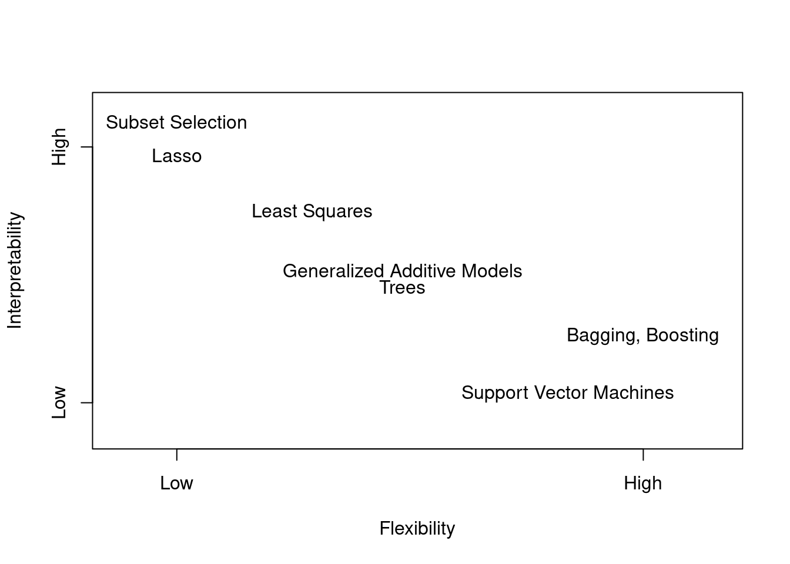
| Method | Pro | Con |
|---|---|---|
| Linear Regression | Easy to interpret | Relatively inflexible |
| Thin Plate Splines | Very flexible | Difficult to understand |
| lasso | More interpretable | less flexible |
| GAMs | more flexible | less interpretable |
2.1.4 2.1.4 Supervised Versus Unsupervised Learning
Most statistical learning problems fall into one of two categories: supervised or unsupervised.
Supervised Learning: For each observation of the predictor measurements \(X_i\), there is an associated response measurement \(Y_i\). These are models where we want to predict outcomes.
Unsupervised Learning: For each observation of the predictor measurements \(X_i\), there is No associated response measurement \(Y_i\)(!) - In this scenario, it is not possible to fit a linear regression, since there is no associated \(Y_i\).
2.1.4.1 Cluster Analysis
One way to understand unsupervised models is through cluster analysis. The goal of this type of analysis is to determine whether \(x_i, ..., x_n\) fall into relatively distinct groups.
Note:
Clustering methods are imprecise – They cannot assign all points to their correct group.
If there are \(p\) variables, then \(p(p- 1) /2)\) scatterplots can be made, this is why automated clustering methods are important.
There are instances where it is not clear whether a problem is supervised or unsupervised – Some \(Y\)’s exist, but not all. These are referred to as semi-supervised learning problems.
iris_cluster <- iris[, -5]
cls <- kmeans(x = iris_cluster, centers = 3)
iris_cluster$cluster <- as.character(cls$cluster)
ggplot() +
geom_point(data = iris_cluster,
mapping = aes(x = Sepal.Length,
y = Petal.Length,
colour = cluster))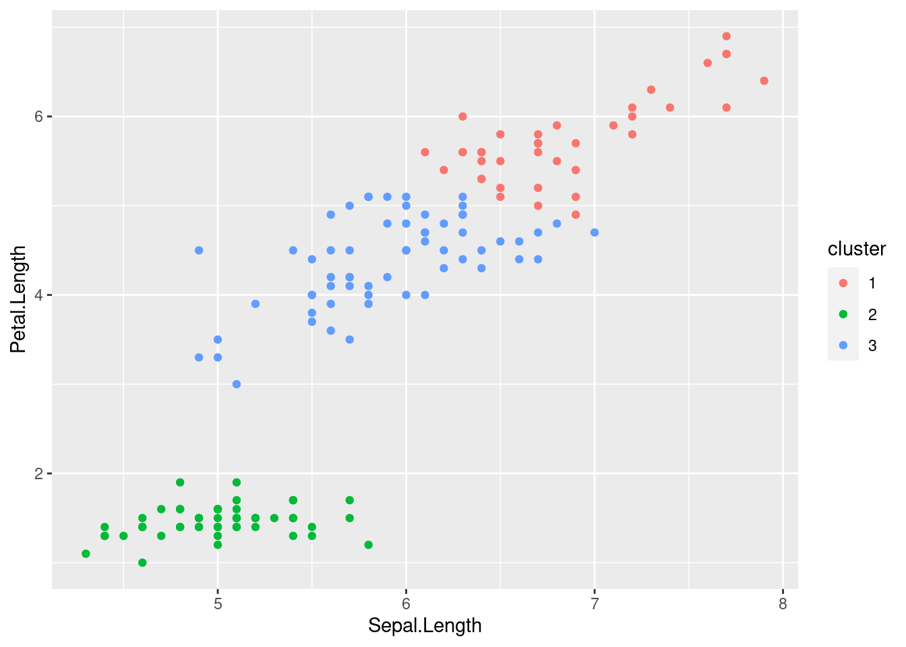
2.1.5 2.1.5 Regression Versus Classification Problems
- Problems with a quantitative response value (numeric) are referred to as regression problems.
- Problems with a qualitative response – a value in one of \(K\) different classes, are referred to as classification problems.
- Qualitative responses are also referred to as categorical values.
2.2 2.2 Assessing Model Accuracy
There is no free lunch in statistics: no one method dominates all others over all possible data sets. On a particular data set, one specific method may work best, but some other method may work better on a similar but different data set.
2.2.1 2.2.1 Measuring the Quality of Fit
When using regressions, quality of fit is most commonly assessed by mean squared error (MSE):
\[ MSE = \frac{1}{n}\sum_{i=1}^n(y_i - \hat{f}(x_i))^2 \] \(\hat{f}(x_i))^2\) is the prediction.
The training MSE will be small if the predicted responses are close to the true responses, and larger if the estimates of the predictions are farther from the true responses.
Examples:
If we are interested in stock prices based on the previous 6 months, we really only care about how well the algorithm predicts tomorrow’s price.
If we train a model on diabetes patient’s clinical measurements, we are only concerned with how well the model predicts future diabetes patients.
Mechanically: If we fit our method on training observations \({(x_1, y_1), (x_2, y_2), …, (x_n, y_n)}\), we use those observations to fit \(\hat{f}(x_1), \hat{f}(x_2), …, \hat{f}(x_n)\).
The aim here is to compute an \(\hat{f}(x_0)\) which is closest to the real unseen \(y_0\) observation, the test data.
2.2.1.1 How do we choose our model?
If we have test data available (not used for training/estimating \(\hat{f}\)), we can simply choose the method which minimizes \(MSE\) on that test data. If we do not have testing data, we can choose the model which minimizes \(MSE\) for our training data, but there is no guarantee that a method with the smallest training \(MSE\) will result in the smallest test \(MSE\).
Note: As model flexibility increases, the training \(MSE\) will decrease, but this does not imply that the test \(MSE\) will similarly decrease. When a method yields a small training \(MSE\) and a large test \(MSE\), we are overfitting our data.
2.2.2 2.2.2 The Bias-Variance Trade-Off
It is possible to prove that the expected test MSE can be decomposed into the sum of three quantities: the variance of \(\hat{f}(x_0)\), the squared bias of \(\hat{f}(x_0)\), and the variance of the error terms \(\epsilon\).
\[ E(y_0 - \hat{f}(x_0))^2 = Var(\hat{f}(x_0)) + [Bias(\hat{f}(x_0))]^2 + Var(\epsilon) \]
To achieve a low expected test error, it is necessary to select a method that results in low variance and low bias. It’s also important to understand that the MSE will never be lower than the \(Var(\epsilon)\), the irreducible error.
Variance refers to the amount \(\hat{f}\) would change if we used different testing data. Generally, more flexible models have higher variance.
Bias is the error introduced by using a simple model to approximate potentially complex functions. More flexible models generally have less bias.
The Bias-Variance trade-off is the challenge of identifying a model which has both low variance and low bias.
2.2.3 2.2.3 The Classification Setting
In the classification context, many of the concepts above still apply, with minor differences because the \(y_0\) is no longer a number value, but instead a qualitative value. The most common approach for gauging the accuracy of a qualitative \(\hat{f}\) is the training error rate:
\[ \frac 1 n \sum_{i=1}^n I(y_i \neq \hat{y_i}) \]
Where \(\hat{y_i}\) is the predicted value for the \(i\)th observation using the function \(\hat{f}\),
\(I(y_i \neq \hat{y_i})\) is an indicator variable, equal to 1 if \(y_i \neq \hat{y_i}\) and zero if not. This computes the fraction of incorrect classifications.
As with regression methods, the our aim should be to reduce the test error rate.
2.2.3.1 The Bayes Classifier
There is a special case in which it can be shown that the test error rate is minized by assigning each observation to it’s most likely class, based on it’s predictor values.
This case is called the Bayes Classifier
\[
Pr(Y = j | X = x_0)
\]
This is the conditional probability that assigns a probability that \(Y = j\), given the observed value \(x_0\). In two class problems, this amounts to an assignment between two classes, class one if \(Pr(Y = 1 | X = x_0) > 0.5\), and class two otherwise. A scenario in which the decision boundary is set to exactly 50% is called a Bayes Decision Boundary.
The Bayes classifier always yields the lowest possible test error rate, since it will assign classification based on the highest probability outcome. The Bayes error rate is defined as:
\[ 1 - \mathrm{E} \lgroup \max_{j} \mathrm{ Pr}(Y=j|X) \] This error rate can also be described as the ratio of classifications that end up on the “wrong” side of the decision boundary.
2.2.3.2 K-Nearest Neighbors
For real data, we do not know the conditional distribution of \(Y\) given \(X\), so computing the Bayes classifier is impossible. One method is to estimate the distributionwith the highest estimated probability. One method is the K-Nearest Neighbors (KNN) approach.
The KNN classifier first identifies the \(K\) points closest to \(x_0\), represented by \(N_0\). It then estimates the probability for class \(j\) as a fraction of the observations in \(N_0\) whose response is equal to \(j\).
\[ Pr(Y=j|X=x_{0}) = \frac{1}{k} \sum_{i \in N_{0}} I (y_{i}=j) \] The KNN method then applies the Bayes rule and classifies \(x_0\) to the class with the highest probability.
The choice of \(K\) can have a drastic effect on the classification outcomes. Choosing a \(K\) that is too low will yield a too-flexible model, with high variance and low bias. Conversely, a \(K\) that is too high will result in a rigid classifier, with lower variance but higher bias.
2.3 2.3 Lab: Introduction to R
2.3.1 2.3.1 Basic Commands
To run a function called function, we type function(input). Objects are defined and then can be called by themselves.
## [1] 1 3 2 5## [1] 1 3 2 5We can check the length of an object in R using the length() function.
## [1] 4The matrix() function can be used to create matrices of any size.
## [,1] [,2]
## [1,] 1 3
## [2,] 2 4The sqrt() function returns the square root of an object passed to it.
## [,1] [,2]
## [1,] 1.000000 1.732051
## [2,] 1.414214 2.000000The rnorm() function generates a vectors of random normal variables. We can use the cor() function to compute the correlation between two vectors.
2.3.2 2.3.2 Graphics
plot() is the primary plotting function in base R. plot(x,y) will produce a plot with the vector x on the x-axis, and y on the y-axis.
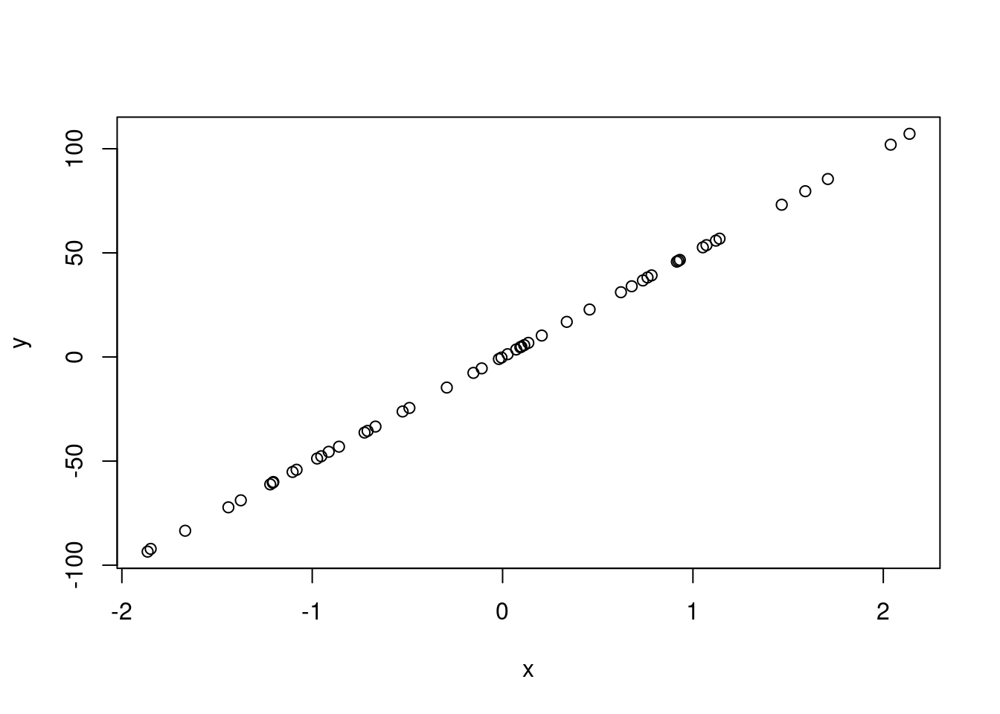 Other useful functions:
mean()var()sqrt()sd()pdf()jpeg()dev.off()seq()
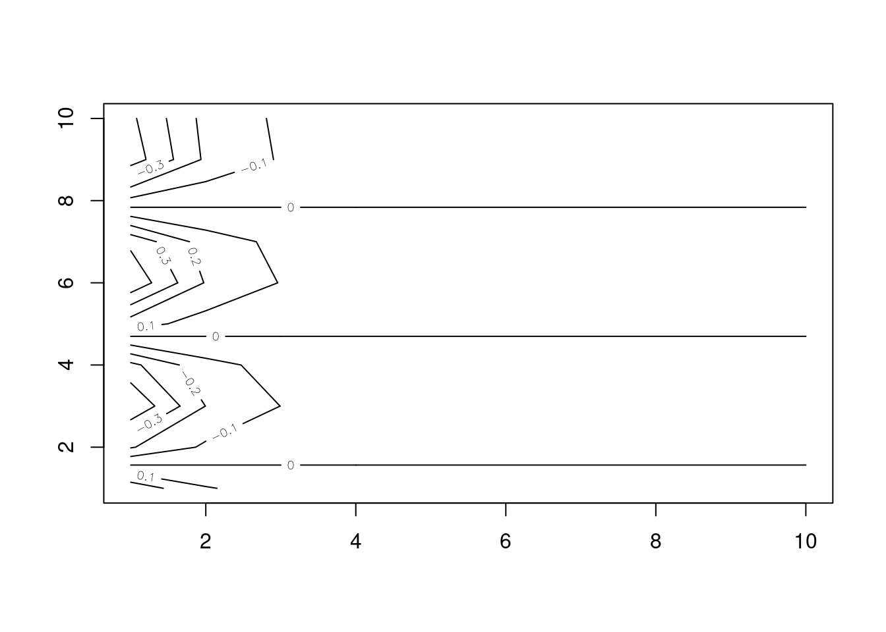
2.3.3 2.3.3 Indexing Data
Indexing is useful for inspecting specific parts of whatever data we are working with.
## [,1] [,2] [,3] [,4]
## [1,] 1 5 9 13
## [2,] 2 6 10 14
## [3,] 3 7 11 15
## [4,] 4 8 12 16To access the third element of the second column:
## [1] 10We can also access multiple rows or columns of data at once:
## [1] 10 11 122.3.4 2.3.4 Loading Data
To work with data in R, the first step is to load it into your session. The read.table() function can be used for this. There are lots of other functions you can use to read data into your session, including those from external packages.
## V1 V2 V3 V4 V5 V6 V7 V8
## 1 mpg cylinders displacement horsepower weight acceleration year origin
## 2 18.0 8 307.0 130.0 3504. 12.0 70 1
## 3 15.0 8 350.0 165.0 3693. 11.5 70 1
## 4 18.0 8 318.0 150.0 3436. 11.0 70 1
## 5 16.0 8 304.0 150.0 3433. 12.0 70 1
## 6 17.0 8 302.0 140.0 3449. 10.5 70 1
## V9
## 1 name
## 2 chevrolet chevelle malibu
## 3 buick skylark 320
## 4 plymouth satellite
## 5 amc rebel sst
## 6 ford torino2.3.4.1 Troubleshooting
It is a good idea to visually inspect your data before and after loading it into your R session. In this case, we have loaded the Auto.data incorrectly, and R assumes there are no column name values. To fix this:
Auto <- read.table("data/Auto.data",
# argument for a header
header = T,
# convert "?" strings to NA
na.strings = "?")Other useful functions:
- na.omit()
- dim()
2.3.5 2.3.5 Additional Graphical and Numerical Summaries
We can use the plot() function to create scatterplots of quantitative variables. When using this function, it is necessary to specify the dataset name:
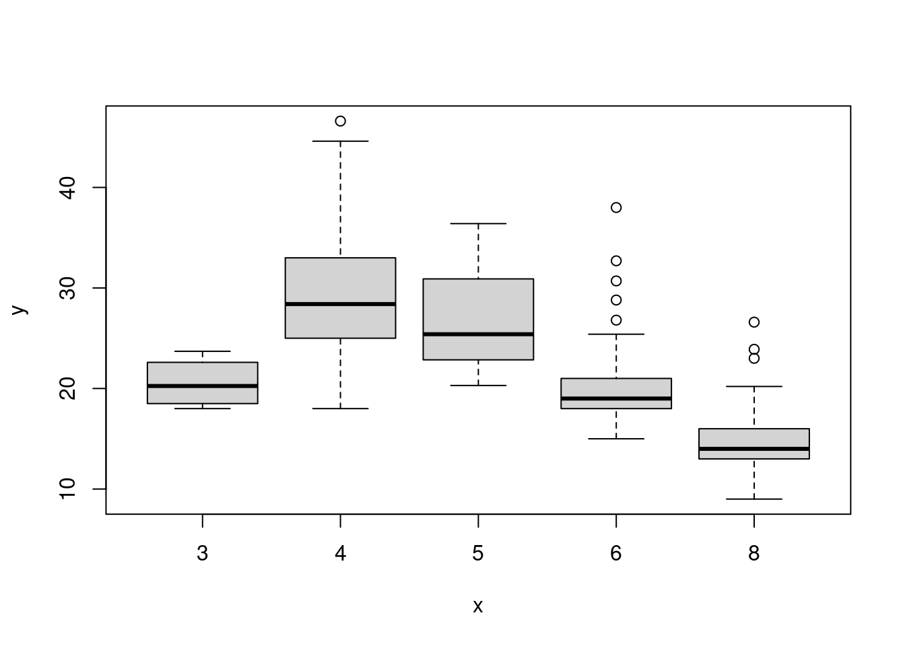
In the graph above, cylinder is converted in a factor variable, since there are only a specific number of possible values. If the variable on the \(x\)-axis is categorical, boxplots will automatically be drawn on the plot.
# There are many plot options available
hist(Auto$mpg, col = "purple",
breaks = 15,
main = "Histogram of Miles per Gallon", xlab = "MPG")
2.4 2.4 Exercises
2.4.1 Conceptual
2.4.1.1 1.
For each of parts (a) through (d), indicate whether we would generally expect the performance of a flexible statistical learning method to be better or worse than an inflexible method. Justify your answer.
(a) The sample size \(n\) is extremely large, and the number of predictors \(p\) is small.
> A flexible model would benefit from the large sample and would fit the data better.
The number of predictors \(p\) is extremely large, and the number of observations \(n\) is small.
> A flexible model would perform worse here and overfit because of the small \(n\).The relationship between the predictors and response is highly non-linear.
> In this case, a more flexible model would perform better than an inflexible one.The variance of the error terms, i.e. \(\sigma^2 = Var(\epsilon)\), is extremely high. > A flexible method would do worse in this situation, because it would fit to the noise in the error terms.
2.4.1.2 2.
Explain whether each scenario is a classification or regression problem, and indicate whether we are most interested in inference or prediction. Finally, provide \(n\) and \(p\).
We collect a set of data on the top 500 firms in the US. For each firm we record profit, number of employees, industry and the CEO salary. We are interested in understanding which factors affect CEO salary.
> Regression. \(n = 500\), \(p = 3\) – profit, employees, and industry.We are considering launching a new product and wish to know whether it will be a success or a failure. We collect data on 20 similar products that were previously launched. For each product we have recorded whether it was a success or failure, price charged for the product, marketing budget, competition price, and ten other variables.
> Classification, the outcome variable will be either be ‘success’ or a ‘failure’. \(n = 20\), \(p = 13\) – price, marketing budget, competition price, and the 10 other variables.
2.4.1.3 3.
We now revisit the bias-variance decomposition.
- Provide a sketch of typical (squared) bias, variance, training error, test error, and Bayes (or irreducible) error curves, on a single plot, as we go from less flexible statistical learning methods towards more flexible approaches. The x-axis should represent the amount of flexibility in the method, and the y-axis should represent the values for each curve. There should be five curves. Make sure to label each one.
An exercise left to the reader.
- Explain why each of the five curves has the shape displayed in part (a).
The squared bias decreases monotonically as model flexibility increases. The variance increases monotonically as model flexibility increases. The training MSE declines as model flexibility increases. The test MSE initially declines, but begins to increase again as it starts to overfit. The irreducible error is constant at a level > 0.
2.4.1.4 4.
You will now think of some real-life applications for statistical learning.
- Describe three real-life applications in which classification might be useful. Describe the response, as well as the predictors. Is the goal of each application inference or prediction? Explain your answer.
- Mortgage Loan application approvals. Response: Loan Approval/Denial. Predictors: Credit score, income, location.
- Disease detection. Response: Disease classification. Predictors: Health, genetic markers, sex.
- Product success. Response: Whether a product is successful or not. Predictors: Competitor price, market share.
- Describe three real-life applications in which regression might be useful. Describe the response, as well as the predictors. Is the goal of each application inference or prediction? Explain your answer.
Discuss!
- Describe three real-life applications in which cluster analysis might be useful.
Discuss!
2.4.1.5 5.
What are the advantages and disadvantages of a very flexible (versus a less flexible) approach for regression or classification? Under what circumstances might a more flexible approach be preferred to a less flexible approach? When might a less flexible approach be preferred?
2.4.1.6 6.
Describe the differences between a parametric and a non-parametric statistical learning approach. What are the advantages of a parametric approach to regression or classification (as opposed to a non-parametric approach)? What are its disadvantages?
2.4.1.7 7.
The table below provides a training data set containing six observations, three predictors, and one qualitative response variable.
| \(Obs\) | \(X_1\) | \(X_2\) | \(X_3\) | \(Y\) |
|---|---|---|---|---|
| \(1\) | \(0\) | \(3\) | \(0\) | \(Red\) |
| \(2\) | \(2\) | \(0\) | \(0\) | \(Red\) |
| \(3\) | \(0\) | \(1\) | \(3\) | \(Red\) |
| \(4\) | \(0\) | \(1\) | \(2\) | \(Green\) |
| \(5\) | \(-1\) | \(0\) | \(1\) | \(Green\) |
| \(6\) | \(1\) | \(1\) | \(1\) | \(Red\) |
Suppose we wish to use this data set to make a prediction for Y when \(X_1 = X_2 = X_3 = 0\) using \(K\)-nearest neighbors.
Compute the Euclidean distance between each observation and the test point, \(X_1 = X_2 = X_3 = 0\).
- What is our prediction with \(K = 1\)? Why?
- What is our prediction with \(K = 3\)? Why?
If the Bayes decision boundary in this problem is highly non-linear, then would we expect the best value for \(K\) to be large or small? Why?
2.4.2 Applied
2.4.2.1 8.
This exercise relates to the College data set, which can be found in the file College.csv. It contains a number of variables for 777 different universities and colleges in the US. The variables are
Private: Public/private indicatorApps: Number of applications receivedAccept: Number of applicants acceptedEnroll: Number of new students enrolledTop10perc: New students from top 10% of high school classTop25perc: New students from top 25% of high school classF.Undergrad: Number of full-time undergraduatesP.Undergrad: Number of part-time undergraduatesOutstate: Out-of-state tuitionRoom.Board: Room and board costsBooks: Estimated book costsPersonal: Estimated personal spendingPhD:Percent of faculty with Ph.D.’sTerminal:Percent of faculty with terminal degreeS.F.Ratio: Student/faculty ratioperc.alumni: Percent of alumni who donateExpend: Instructional expenditure per studentGrad.Rate: Graduation rate
Before reading the data into R, it can be viewed in Excel or a text editor.
- Use the
read.csv()function to read the data into R. Call the loaded datacollege. Make sure that you have the directory set to the correct location for the data.
if(!file.exists("data/Collage.csv")){
download.file("https://www.statlearning.com/s/College.csv", destfile = "data/College.csv")
}
college <- read.csv("data/College.csv")- Look at the data using the fix() function. You should notice that the first column is just the name of each university. We don’t really want R to treat this as data. However, it may be handy to have these names for later. Try the following commands:
# fix(college)
# add first column as rownames
rownames(college) <- college[, 1]
college <- college[, -1]- Use the
summary()function to produce a numerical summary of the variables in the data set.
- Use the
## Private Apps Accept Enroll
## Length:777 Min. : 81 Min. : 72 Min. : 35
## Class :character 1st Qu.: 776 1st Qu.: 604 1st Qu.: 242
## Mode :character Median : 1558 Median : 1110 Median : 434
## Mean : 3002 Mean : 2019 Mean : 780
## 3rd Qu.: 3624 3rd Qu.: 2424 3rd Qu.: 902
## Max. :48094 Max. :26330 Max. :6392
## Top10perc Top25perc F.Undergrad P.Undergrad
## Min. : 1.00 Min. : 9.0 Min. : 139 Min. : 1.0
## 1st Qu.:15.00 1st Qu.: 41.0 1st Qu.: 992 1st Qu.: 95.0
## Median :23.00 Median : 54.0 Median : 1707 Median : 353.0
## Mean :27.56 Mean : 55.8 Mean : 3700 Mean : 855.3
## 3rd Qu.:35.00 3rd Qu.: 69.0 3rd Qu.: 4005 3rd Qu.: 967.0
## Max. :96.00 Max. :100.0 Max. :31643 Max. :21836.0
## Outstate Room.Board Books Personal
## Min. : 2340 Min. :1780 Min. : 96.0 Min. : 250
## 1st Qu.: 7320 1st Qu.:3597 1st Qu.: 470.0 1st Qu.: 850
## Median : 9990 Median :4200 Median : 500.0 Median :1200
## Mean :10441 Mean :4358 Mean : 549.4 Mean :1341
## 3rd Qu.:12925 3rd Qu.:5050 3rd Qu.: 600.0 3rd Qu.:1700
## Max. :21700 Max. :8124 Max. :2340.0 Max. :6800
## PhD Terminal S.F.Ratio perc.alumni
## Min. : 8.00 Min. : 24.0 Min. : 2.50 Min. : 0.00
## 1st Qu.: 62.00 1st Qu.: 71.0 1st Qu.:11.50 1st Qu.:13.00
## Median : 75.00 Median : 82.0 Median :13.60 Median :21.00
## Mean : 72.66 Mean : 79.7 Mean :14.09 Mean :22.74
## 3rd Qu.: 85.00 3rd Qu.: 92.0 3rd Qu.:16.50 3rd Qu.:31.00
## Max. :103.00 Max. :100.0 Max. :39.80 Max. :64.00
## Expend Grad.Rate
## Min. : 3186 Min. : 10.00
## 1st Qu.: 6751 1st Qu.: 53.00
## Median : 8377 Median : 65.00
## Mean : 9660 Mean : 65.46
## 3rd Qu.:10830 3rd Qu.: 78.00
## Max. :56233 Max. :118.00- Use the
pairs()function to produce a scatterplot matrix of the first ten columns or variables of the data. Recall that you can reference the first ten columns of a matrixAusingA[,1:10].
- Use the
## Error in pairs.default(college[, 1:10]): non-numeric argument to 'pairs'- Use the
plot()function to produce side-by-side boxplots ofOutstateversusPrivate.
- Use the
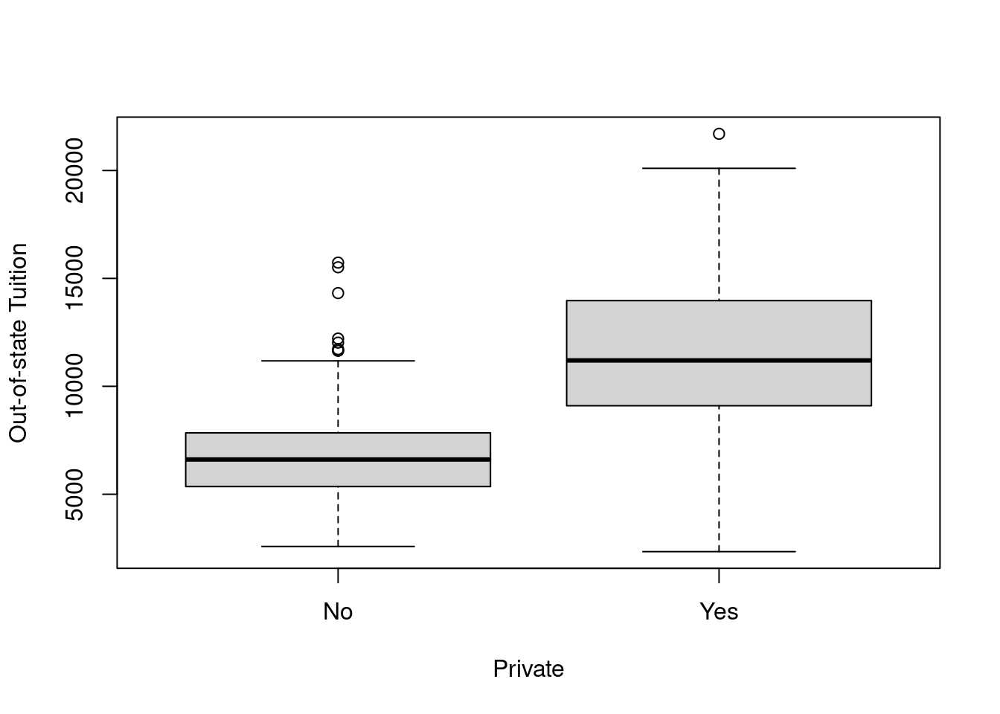
- Create a new qualitative variable, called
Elite, by binning theTop10percvariable. We are going to divide universitiesinto two groups based on whether or not the proportion of students coming from the top 10% of their high school classes exceeds 50%.
- Create a new qualitative variable, called
Elite <- rep("No",nrow(college))
Elite[college$Top10perc>50]="Yes"
Elite <- as.factor(Elite)
college=data.frame(college,Elite)Use the summary() function to see how many elite universities there are. Now use the plot() function to produce side-by-side boxplots of Outstate versus Elite.
## No Yes
## 699 78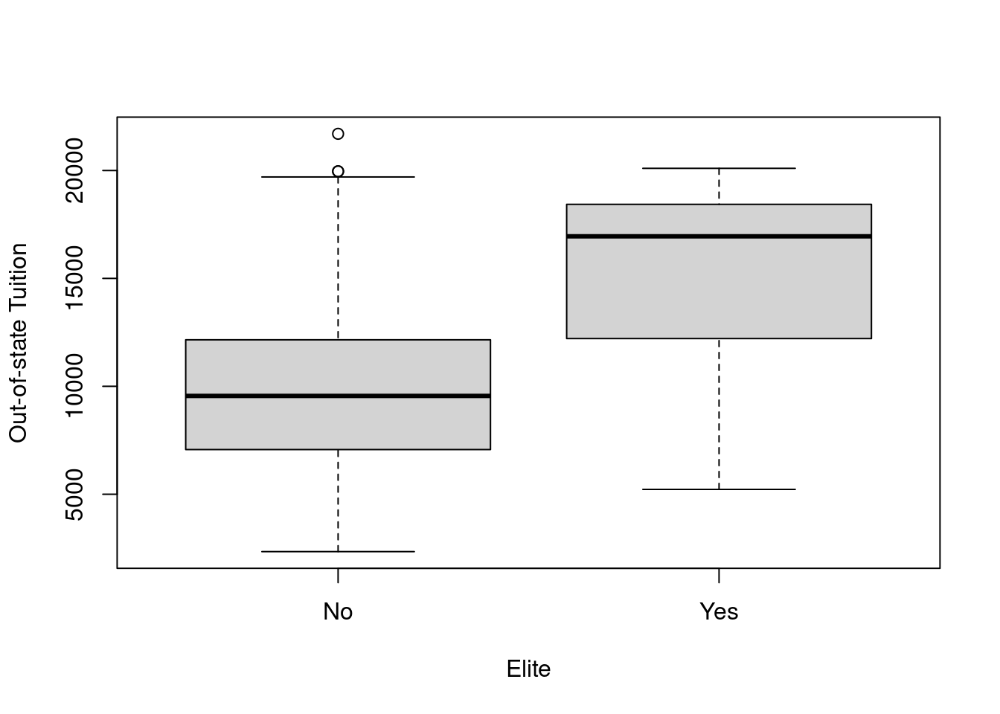
- Use the
hist()function to produce some histograms with differing numbers of bins for a few of the quantitative variables. You may find the commandpar(mfrow=c(2,2))useful: it will divide the print window into four regions so that four plots can be made simultaneously. Modifying the arguments to this function will divide the screen in other ways.
- Use the
par(mfrow=c(2,2))
hist(college$Top10perc)
hist(college$F.Undergrad, breaks = 15)
hist(college$S.F.Ratio, breaks = 5)
hist(college$Room.Board, breaks = 10)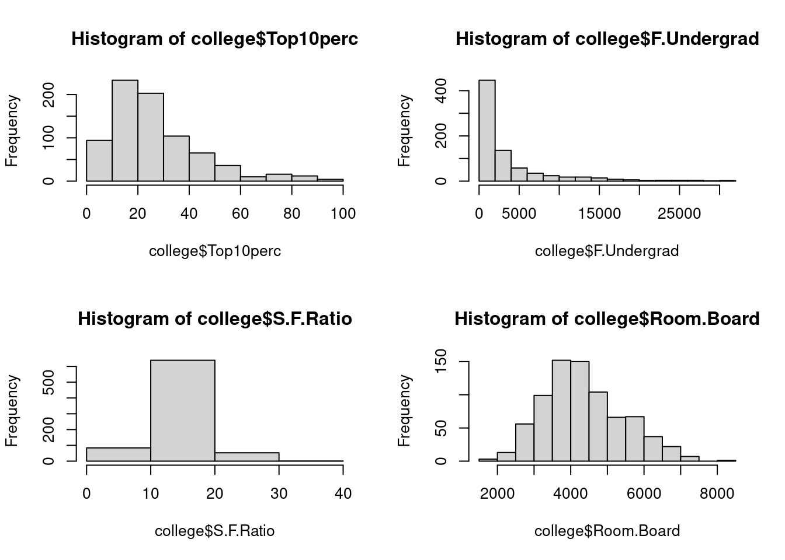
- Continue exploring the data, and provide a brief summary of what you discover.
plot(college$S.F.Ratio, college$perc.alumni,
xlab = "Student/Faculty Ratio",
ylab = "Percent of Alumni who Donate"
)
lines(predict(lm(perc.alumni~S.F.Ratio, data = college)),
col='red')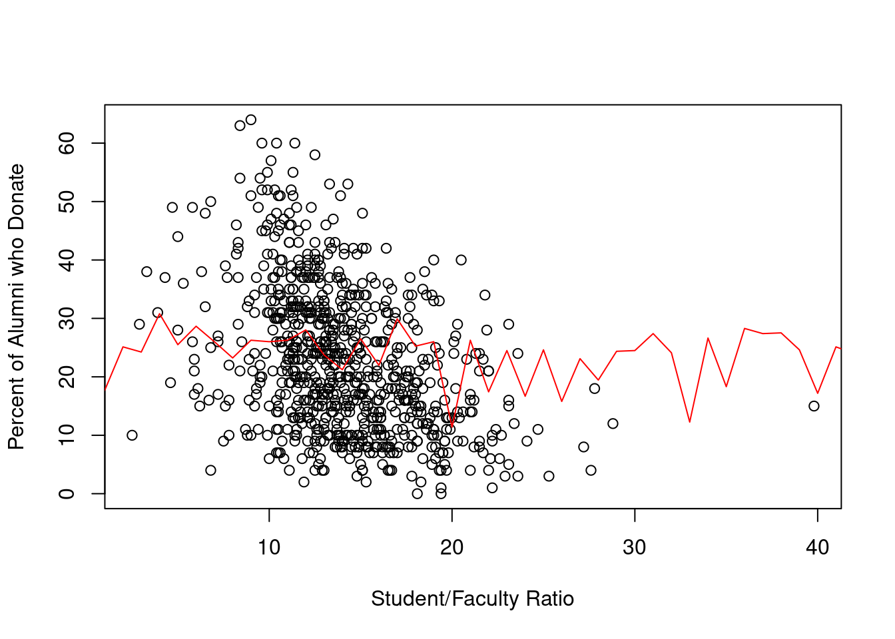 > Plotting Student/Faculty ratio and the percent of alumni who donate does not show clear relationship that I thought would show up. etc etc discuss.
2.4.2.2 9.
This exercise involves the Auto data set studied in the lab. Make sure that the missing values have been removed from the data.
## 'data.frame': 392 obs. of 9 variables:
## $ mpg : num 18 15 18 16 17 15 14 14 14 15 ...
## $ cylinders : int 8 8 8 8 8 8 8 8 8 8 ...
## $ displacement: num 307 350 318 304 302 429 454 440 455 390 ...
## $ horsepower : num 130 165 150 150 140 198 220 215 225 190 ...
## $ weight : num 3504 3693 3436 3433 3449 ...
## $ acceleration: num 12 11.5 11 12 10.5 10 9 8.5 10 8.5 ...
## $ year : int 70 70 70 70 70 70 70 70 70 70 ...
## $ origin : int 1 1 1 1 1 1 1 1 1 1 ...
## $ name : chr "chevrolet chevelle malibu" "buick skylark 320" "plymouth satellite" "amc rebel sst" ...
## - attr(*, "na.action")= 'omit' Named int [1:5] 33 127 331 337 355
## ..- attr(*, "names")= chr [1:5] "33" "127" "331" "337" ...- Which of the predictors are quantitative, and which are qualitative?
Cylinders, origin, and name are the qualitative variables. The rest of the variables are quantitative.
- What is the range of each quantitative predictor? You can answer this using the range() function.
# this is a fancy way to do this
vars <- setdiff(names(Auto), c("cylinders", "origin", "name"))
sapply(vars, function(v) range(Auto[v]), USE.NAMES = T)## mpg displacement horsepower weight acceleration year
## [1,] 9.0 68 46 1613 8.0 70
## [2,] 46.6 455 230 5140 24.8 82- What is the mean and standard deviation of each quantitative predictor?
## mpg displacement horsepower weight acceleration year
## 23.44592 194.41199 104.46939 2977.58418 15.54133 75.97959## mpg displacement horsepower weight acceleration year
## 7.805007 104.644004 38.491160 849.402560 2.758864 3.683737- Now remove the 10th through 85th observations. What is the range, mean, and standard deviation of each predictor in the subset of the data that remains?
## mpg displacement horsepower weight acceleration year
## [1,] 9.0 68 46 1613 8.0 70
## [2,] 46.6 455 230 5140 24.8 82## mpg displacement horsepower weight acceleration year
## 23.44592 194.41199 104.46939 2977.58418 15.54133 75.97959## mpg displacement horsepower weight acceleration year
## 7.805007 104.644004 38.491160 849.402560 2.758864 3.683737- Using the full data set, investigate the predictors graphically, using scatterplots or other tools of your choice. Create some plots highlighting the relationships among the predictors. Comment on your findings.
## Error in pairs.default(Auto): non-numeric argument to 'pairs'- Suppose that we wish to predict gas mileage ( mpg ) on the basis of the other variables. Do your plots suggest that any of the other variables might be useful in predicting mpg ? Justify your answer.
## [1] 0.8645377## [1] 0.93299442.4.2.3 10.
This exercise involves the Boston housing data set.
- To begin, load in the Boston data set. The Boston data set is part of the
MASSlibrary in R.
##
## Attaching package: 'MASS'## The following object is masked from 'package:dplyr':
##
## select## crim zn indus chas nox rm age dis rad tax ptratio black
## 1 0.00632 18.0 2.31 0 0.5380 6.575 65.2 4.0900 1 296 15.3 396.90
## 2 0.02731 0.0 7.07 0 0.4690 6.421 78.9 4.9671 2 242 17.8 396.90
## 3 0.02729 0.0 7.07 0 0.4690 7.185 61.1 4.9671 2 242 17.8 392.83
## 4 0.03237 0.0 2.18 0 0.4580 6.998 45.8 6.0622 3 222 18.7 394.63
## 5 0.06905 0.0 2.18 0 0.4580 7.147 54.2 6.0622 3 222 18.7 396.90
## 6 0.02985 0.0 2.18 0 0.4580 6.430 58.7 6.0622 3 222 18.7 394.12
## 7 0.08829 12.5 7.87 0 0.5240 6.012 66.6 5.5605 5 311 15.2 395.60
## 8 0.14455 12.5 7.87 0 0.5240 6.172 96.1 5.9505 5 311 15.2 396.90
## 9 0.21124 12.5 7.87 0 0.5240 5.631 100.0 6.0821 5 311 15.2 386.63
## 10 0.17004 12.5 7.87 0 0.5240 6.004 85.9 6.5921 5 311 15.2 386.71
## 11 0.22489 12.5 7.87 0 0.5240 6.377 94.3 6.3467 5 311 15.2 392.52
## 12 0.11747 12.5 7.87 0 0.5240 6.009 82.9 6.2267 5 311 15.2 396.90
## 13 0.09378 12.5 7.87 0 0.5240 5.889 39.0 5.4509 5 311 15.2 390.50
## 14 0.62976 0.0 8.14 0 0.5380 5.949 61.8 4.7075 4 307 21.0 396.90
## 15 0.63796 0.0 8.14 0 0.5380 6.096 84.5 4.4619 4 307 21.0 380.02
## 16 0.62739 0.0 8.14 0 0.5380 5.834 56.5 4.4986 4 307 21.0 395.62
## 17 1.05393 0.0 8.14 0 0.5380 5.935 29.3 4.4986 4 307 21.0 386.85
## 18 0.78420 0.0 8.14 0 0.5380 5.990 81.7 4.2579 4 307 21.0 386.75
## 19 0.80271 0.0 8.14 0 0.5380 5.456 36.6 3.7965 4 307 21.0 288.99
## 20 0.72580 0.0 8.14 0 0.5380 5.727 69.5 3.7965 4 307 21.0 390.95
## 21 1.25179 0.0 8.14 0 0.5380 5.570 98.1 3.7979 4 307 21.0 376.57
## 22 0.85204 0.0 8.14 0 0.5380 5.965 89.2 4.0123 4 307 21.0 392.53
## 23 1.23247 0.0 8.14 0 0.5380 6.142 91.7 3.9769 4 307 21.0 396.90
## 24 0.98843 0.0 8.14 0 0.5380 5.813 100.0 4.0952 4 307 21.0 394.54
## 25 0.75026 0.0 8.14 0 0.5380 5.924 94.1 4.3996 4 307 21.0 394.33
## 26 0.84054 0.0 8.14 0 0.5380 5.599 85.7 4.4546 4 307 21.0 303.42
## 27 0.67191 0.0 8.14 0 0.5380 5.813 90.3 4.6820 4 307 21.0 376.88
## 28 0.95577 0.0 8.14 0 0.5380 6.047 88.8 4.4534 4 307 21.0 306.38
## 29 0.77299 0.0 8.14 0 0.5380 6.495 94.4 4.4547 4 307 21.0 387.94
## 30 1.00245 0.0 8.14 0 0.5380 6.674 87.3 4.2390 4 307 21.0 380.23
## 31 1.13081 0.0 8.14 0 0.5380 5.713 94.1 4.2330 4 307 21.0 360.17
## 32 1.35472 0.0 8.14 0 0.5380 6.072 100.0 4.1750 4 307 21.0 376.73
## 33 1.38799 0.0 8.14 0 0.5380 5.950 82.0 3.9900 4 307 21.0 232.60
## 34 1.15172 0.0 8.14 0 0.5380 5.701 95.0 3.7872 4 307 21.0 358.77
## 35 1.61282 0.0 8.14 0 0.5380 6.096 96.9 3.7598 4 307 21.0 248.31
## 36 0.06417 0.0 5.96 0 0.4990 5.933 68.2 3.3603 5 279 19.2 396.90
## 37 0.09744 0.0 5.96 0 0.4990 5.841 61.4 3.3779 5 279 19.2 377.56
## 38 0.08014 0.0 5.96 0 0.4990 5.850 41.5 3.9342 5 279 19.2 396.90
## 39 0.17505 0.0 5.96 0 0.4990 5.966 30.2 3.8473 5 279 19.2 393.43
## 40 0.02763 75.0 2.95 0 0.4280 6.595 21.8 5.4011 3 252 18.3 395.63
## 41 0.03359 75.0 2.95 0 0.4280 7.024 15.8 5.4011 3 252 18.3 395.62
## 42 0.12744 0.0 6.91 0 0.4480 6.770 2.9 5.7209 3 233 17.9 385.41
## 43 0.14150 0.0 6.91 0 0.4480 6.169 6.6 5.7209 3 233 17.9 383.37
## 44 0.15936 0.0 6.91 0 0.4480 6.211 6.5 5.7209 3 233 17.9 394.46
## 45 0.12269 0.0 6.91 0 0.4480 6.069 40.0 5.7209 3 233 17.9 389.39
## 46 0.17142 0.0 6.91 0 0.4480 5.682 33.8 5.1004 3 233 17.9 396.90
## 47 0.18836 0.0 6.91 0 0.4480 5.786 33.3 5.1004 3 233 17.9 396.90
## 48 0.22927 0.0 6.91 0 0.4480 6.030 85.5 5.6894 3 233 17.9 392.74
## 49 0.25387 0.0 6.91 0 0.4480 5.399 95.3 5.8700 3 233 17.9 396.90
## 50 0.21977 0.0 6.91 0 0.4480 5.602 62.0 6.0877 3 233 17.9 396.90
## 51 0.08873 21.0 5.64 0 0.4390 5.963 45.7 6.8147 4 243 16.8 395.56
## 52 0.04337 21.0 5.64 0 0.4390 6.115 63.0 6.8147 4 243 16.8 393.97
## 53 0.05360 21.0 5.64 0 0.4390 6.511 21.1 6.8147 4 243 16.8 396.90
## 54 0.04981 21.0 5.64 0 0.4390 5.998 21.4 6.8147 4 243 16.8 396.90
## 55 0.01360 75.0 4.00 0 0.4100 5.888 47.6 7.3197 3 469 21.1 396.90
## 56 0.01311 90.0 1.22 0 0.4030 7.249 21.9 8.6966 5 226 17.9 395.93
## 57 0.02055 85.0 0.74 0 0.4100 6.383 35.7 9.1876 2 313 17.3 396.90
## 58 0.01432 100.0 1.32 0 0.4110 6.816 40.5 8.3248 5 256 15.1 392.90
## 59 0.15445 25.0 5.13 0 0.4530 6.145 29.2 7.8148 8 284 19.7 390.68
## 60 0.10328 25.0 5.13 0 0.4530 5.927 47.2 6.9320 8 284 19.7 396.90
## 61 0.14932 25.0 5.13 0 0.4530 5.741 66.2 7.2254 8 284 19.7 395.11
## 62 0.17171 25.0 5.13 0 0.4530 5.966 93.4 6.8185 8 284 19.7 378.08
## 63 0.11027 25.0 5.13 0 0.4530 6.456 67.8 7.2255 8 284 19.7 396.90
## 64 0.12650 25.0 5.13 0 0.4530 6.762 43.4 7.9809 8 284 19.7 395.58
## 65 0.01951 17.5 1.38 0 0.4161 7.104 59.5 9.2229 3 216 18.6 393.24
## 66 0.03584 80.0 3.37 0 0.3980 6.290 17.8 6.6115 4 337 16.1 396.90
## 67 0.04379 80.0 3.37 0 0.3980 5.787 31.1 6.6115 4 337 16.1 396.90
## 68 0.05789 12.5 6.07 0 0.4090 5.878 21.4 6.4980 4 345 18.9 396.21
## 69 0.13554 12.5 6.07 0 0.4090 5.594 36.8 6.4980 4 345 18.9 396.90
## 70 0.12816 12.5 6.07 0 0.4090 5.885 33.0 6.4980 4 345 18.9 396.90
## 71 0.08826 0.0 10.81 0 0.4130 6.417 6.6 5.2873 4 305 19.2 383.73
## 72 0.15876 0.0 10.81 0 0.4130 5.961 17.5 5.2873 4 305 19.2 376.94
## 73 0.09164 0.0 10.81 0 0.4130 6.065 7.8 5.2873 4 305 19.2 390.91
## 74 0.19539 0.0 10.81 0 0.4130 6.245 6.2 5.2873 4 305 19.2 377.17
## 75 0.07896 0.0 12.83 0 0.4370 6.273 6.0 4.2515 5 398 18.7 394.92
## 76 0.09512 0.0 12.83 0 0.4370 6.286 45.0 4.5026 5 398 18.7 383.23
## 77 0.10153 0.0 12.83 0 0.4370 6.279 74.5 4.0522 5 398 18.7 373.66
## 78 0.08707 0.0 12.83 0 0.4370 6.140 45.8 4.0905 5 398 18.7 386.96
## 79 0.05646 0.0 12.83 0 0.4370 6.232 53.7 5.0141 5 398 18.7 386.40
## 80 0.08387 0.0 12.83 0 0.4370 5.874 36.6 4.5026 5 398 18.7 396.06
## 81 0.04113 25.0 4.86 0 0.4260 6.727 33.5 5.4007 4 281 19.0 396.90
## 82 0.04462 25.0 4.86 0 0.4260 6.619 70.4 5.4007 4 281 19.0 395.63
## 83 0.03659 25.0 4.86 0 0.4260 6.302 32.2 5.4007 4 281 19.0 396.90
## 84 0.03551 25.0 4.86 0 0.4260 6.167 46.7 5.4007 4 281 19.0 390.64
## 85 0.05059 0.0 4.49 0 0.4490 6.389 48.0 4.7794 3 247 18.5 396.90
## 86 0.05735 0.0 4.49 0 0.4490 6.630 56.1 4.4377 3 247 18.5 392.30
## 87 0.05188 0.0 4.49 0 0.4490 6.015 45.1 4.4272 3 247 18.5 395.99
## 88 0.07151 0.0 4.49 0 0.4490 6.121 56.8 3.7476 3 247 18.5 395.15
## 89 0.05660 0.0 3.41 0 0.4890 7.007 86.3 3.4217 2 270 17.8 396.90
## 90 0.05302 0.0 3.41 0 0.4890 7.079 63.1 3.4145 2 270 17.8 396.06
## 91 0.04684 0.0 3.41 0 0.4890 6.417 66.1 3.0923 2 270 17.8 392.18
## 92 0.03932 0.0 3.41 0 0.4890 6.405 73.9 3.0921 2 270 17.8 393.55
## 93 0.04203 28.0 15.04 0 0.4640 6.442 53.6 3.6659 4 270 18.2 395.01
## 94 0.02875 28.0 15.04 0 0.4640 6.211 28.9 3.6659 4 270 18.2 396.33
## 95 0.04294 28.0 15.04 0 0.4640 6.249 77.3 3.6150 4 270 18.2 396.90
## 96 0.12204 0.0 2.89 0 0.4450 6.625 57.8 3.4952 2 276 18.0 357.98
## 97 0.11504 0.0 2.89 0 0.4450 6.163 69.6 3.4952 2 276 18.0 391.83
## 98 0.12083 0.0 2.89 0 0.4450 8.069 76.0 3.4952 2 276 18.0 396.90
## 99 0.08187 0.0 2.89 0 0.4450 7.820 36.9 3.4952 2 276 18.0 393.53
## 100 0.06860 0.0 2.89 0 0.4450 7.416 62.5 3.4952 2 276 18.0 396.90
## 101 0.14866 0.0 8.56 0 0.5200 6.727 79.9 2.7778 5 384 20.9 394.76
## 102 0.11432 0.0 8.56 0 0.5200 6.781 71.3 2.8561 5 384 20.9 395.58
## 103 0.22876 0.0 8.56 0 0.5200 6.405 85.4 2.7147 5 384 20.9 70.80
## 104 0.21161 0.0 8.56 0 0.5200 6.137 87.4 2.7147 5 384 20.9 394.47
## 105 0.13960 0.0 8.56 0 0.5200 6.167 90.0 2.4210 5 384 20.9 392.69
## 106 0.13262 0.0 8.56 0 0.5200 5.851 96.7 2.1069 5 384 20.9 394.05
## 107 0.17120 0.0 8.56 0 0.5200 5.836 91.9 2.2110 5 384 20.9 395.67
## 108 0.13117 0.0 8.56 0 0.5200 6.127 85.2 2.1224 5 384 20.9 387.69
## 109 0.12802 0.0 8.56 0 0.5200 6.474 97.1 2.4329 5 384 20.9 395.24
## 110 0.26363 0.0 8.56 0 0.5200 6.229 91.2 2.5451 5 384 20.9 391.23
## 111 0.10793 0.0 8.56 0 0.5200 6.195 54.4 2.7778 5 384 20.9 393.49
## 112 0.10084 0.0 10.01 0 0.5470 6.715 81.6 2.6775 6 432 17.8 395.59
## 113 0.12329 0.0 10.01 0 0.5470 5.913 92.9 2.3534 6 432 17.8 394.95
## 114 0.22212 0.0 10.01 0 0.5470 6.092 95.4 2.5480 6 432 17.8 396.90
## 115 0.14231 0.0 10.01 0 0.5470 6.254 84.2 2.2565 6 432 17.8 388.74
## 116 0.17134 0.0 10.01 0 0.5470 5.928 88.2 2.4631 6 432 17.8 344.91
## 117 0.13158 0.0 10.01 0 0.5470 6.176 72.5 2.7301 6 432 17.8 393.30
## 118 0.15098 0.0 10.01 0 0.5470 6.021 82.6 2.7474 6 432 17.8 394.51
## 119 0.13058 0.0 10.01 0 0.5470 5.872 73.1 2.4775 6 432 17.8 338.63
## 120 0.14476 0.0 10.01 0 0.5470 5.731 65.2 2.7592 6 432 17.8 391.50
## 121 0.06899 0.0 25.65 0 0.5810 5.870 69.7 2.2577 2 188 19.1 389.15
## 122 0.07165 0.0 25.65 0 0.5810 6.004 84.1 2.1974 2 188 19.1 377.67
## 123 0.09299 0.0 25.65 0 0.5810 5.961 92.9 2.0869 2 188 19.1 378.09
## 124 0.15038 0.0 25.65 0 0.5810 5.856 97.0 1.9444 2 188 19.1 370.31
## 125 0.09849 0.0 25.65 0 0.5810 5.879 95.8 2.0063 2 188 19.1 379.38
## 126 0.16902 0.0 25.65 0 0.5810 5.986 88.4 1.9929 2 188 19.1 385.02
## 127 0.38735 0.0 25.65 0 0.5810 5.613 95.6 1.7572 2 188 19.1 359.29
## 128 0.25915 0.0 21.89 0 0.6240 5.693 96.0 1.7883 4 437 21.2 392.11
## 129 0.32543 0.0 21.89 0 0.6240 6.431 98.8 1.8125 4 437 21.2 396.90
## 130 0.88125 0.0 21.89 0 0.6240 5.637 94.7 1.9799 4 437 21.2 396.90
## 131 0.34006 0.0 21.89 0 0.6240 6.458 98.9 2.1185 4 437 21.2 395.04
## 132 1.19294 0.0 21.89 0 0.6240 6.326 97.7 2.2710 4 437 21.2 396.90
## 133 0.59005 0.0 21.89 0 0.6240 6.372 97.9 2.3274 4 437 21.2 385.76
## 134 0.32982 0.0 21.89 0 0.6240 5.822 95.4 2.4699 4 437 21.2 388.69
## 135 0.97617 0.0 21.89 0 0.6240 5.757 98.4 2.3460 4 437 21.2 262.76
## 136 0.55778 0.0 21.89 0 0.6240 6.335 98.2 2.1107 4 437 21.2 394.67
## 137 0.32264 0.0 21.89 0 0.6240 5.942 93.5 1.9669 4 437 21.2 378.25
## 138 0.35233 0.0 21.89 0 0.6240 6.454 98.4 1.8498 4 437 21.2 394.08
## 139 0.24980 0.0 21.89 0 0.6240 5.857 98.2 1.6686 4 437 21.2 392.04
## 140 0.54452 0.0 21.89 0 0.6240 6.151 97.9 1.6687 4 437 21.2 396.90
## 141 0.29090 0.0 21.89 0 0.6240 6.174 93.6 1.6119 4 437 21.2 388.08
## 142 1.62864 0.0 21.89 0 0.6240 5.019 100.0 1.4394 4 437 21.2 396.90
## 143 3.32105 0.0 19.58 1 0.8710 5.403 100.0 1.3216 5 403 14.7 396.90
## 144 4.09740 0.0 19.58 0 0.8710 5.468 100.0 1.4118 5 403 14.7 396.90
## 145 2.77974 0.0 19.58 0 0.8710 4.903 97.8 1.3459 5 403 14.7 396.90
## 146 2.37934 0.0 19.58 0 0.8710 6.130 100.0 1.4191 5 403 14.7 172.91
## 147 2.15505 0.0 19.58 0 0.8710 5.628 100.0 1.5166 5 403 14.7 169.27
## 148 2.36862 0.0 19.58 0 0.8710 4.926 95.7 1.4608 5 403 14.7 391.71
## 149 2.33099 0.0 19.58 0 0.8710 5.186 93.8 1.5296 5 403 14.7 356.99
## 150 2.73397 0.0 19.58 0 0.8710 5.597 94.9 1.5257 5 403 14.7 351.85
## 151 1.65660 0.0 19.58 0 0.8710 6.122 97.3 1.6180 5 403 14.7 372.80
## 152 1.49632 0.0 19.58 0 0.8710 5.404 100.0 1.5916 5 403 14.7 341.60
## 153 1.12658 0.0 19.58 1 0.8710 5.012 88.0 1.6102 5 403 14.7 343.28
## 154 2.14918 0.0 19.58 0 0.8710 5.709 98.5 1.6232 5 403 14.7 261.95
## 155 1.41385 0.0 19.58 1 0.8710 6.129 96.0 1.7494 5 403 14.7 321.02
## 156 3.53501 0.0 19.58 1 0.8710 6.152 82.6 1.7455 5 403 14.7 88.01
## 157 2.44668 0.0 19.58 0 0.8710 5.272 94.0 1.7364 5 403 14.7 88.63
## 158 1.22358 0.0 19.58 0 0.6050 6.943 97.4 1.8773 5 403 14.7 363.43
## 159 1.34284 0.0 19.58 0 0.6050 6.066 100.0 1.7573 5 403 14.7 353.89
## 160 1.42502 0.0 19.58 0 0.8710 6.510 100.0 1.7659 5 403 14.7 364.31
## 161 1.27346 0.0 19.58 1 0.6050 6.250 92.6 1.7984 5 403 14.7 338.92
## 162 1.46336 0.0 19.58 0 0.6050 7.489 90.8 1.9709 5 403 14.7 374.43
## 163 1.83377 0.0 19.58 1 0.6050 7.802 98.2 2.0407 5 403 14.7 389.61
## 164 1.51902 0.0 19.58 1 0.6050 8.375 93.9 2.1620 5 403 14.7 388.45
## 165 2.24236 0.0 19.58 0 0.6050 5.854 91.8 2.4220 5 403 14.7 395.11
## 166 2.92400 0.0 19.58 0 0.6050 6.101 93.0 2.2834 5 403 14.7 240.16
## 167 2.01019 0.0 19.58 0 0.6050 7.929 96.2 2.0459 5 403 14.7 369.30
## 168 1.80028 0.0 19.58 0 0.6050 5.877 79.2 2.4259 5 403 14.7 227.61
## 169 2.30040 0.0 19.58 0 0.6050 6.319 96.1 2.1000 5 403 14.7 297.09
## 170 2.44953 0.0 19.58 0 0.6050 6.402 95.2 2.2625 5 403 14.7 330.04
## 171 1.20742 0.0 19.58 0 0.6050 5.875 94.6 2.4259 5 403 14.7 292.29
## 172 2.31390 0.0 19.58 0 0.6050 5.880 97.3 2.3887 5 403 14.7 348.13
## 173 0.13914 0.0 4.05 0 0.5100 5.572 88.5 2.5961 5 296 16.6 396.90
## 174 0.09178 0.0 4.05 0 0.5100 6.416 84.1 2.6463 5 296 16.6 395.50
## 175 0.08447 0.0 4.05 0 0.5100 5.859 68.7 2.7019 5 296 16.6 393.23
## 176 0.06664 0.0 4.05 0 0.5100 6.546 33.1 3.1323 5 296 16.6 390.96
## 177 0.07022 0.0 4.05 0 0.5100 6.020 47.2 3.5549 5 296 16.6 393.23
## 178 0.05425 0.0 4.05 0 0.5100 6.315 73.4 3.3175 5 296 16.6 395.60
## 179 0.06642 0.0 4.05 0 0.5100 6.860 74.4 2.9153 5 296 16.6 391.27
## 180 0.05780 0.0 2.46 0 0.4880 6.980 58.4 2.8290 3 193 17.8 396.90
## 181 0.06588 0.0 2.46 0 0.4880 7.765 83.3 2.7410 3 193 17.8 395.56
## 182 0.06888 0.0 2.46 0 0.4880 6.144 62.2 2.5979 3 193 17.8 396.90
## 183 0.09103 0.0 2.46 0 0.4880 7.155 92.2 2.7006 3 193 17.8 394.12
## 184 0.10008 0.0 2.46 0 0.4880 6.563 95.6 2.8470 3 193 17.8 396.90
## 185 0.08308 0.0 2.46 0 0.4880 5.604 89.8 2.9879 3 193 17.8 391.00
## 186 0.06047 0.0 2.46 0 0.4880 6.153 68.8 3.2797 3 193 17.8 387.11
## 187 0.05602 0.0 2.46 0 0.4880 7.831 53.6 3.1992 3 193 17.8 392.63
## 188 0.07875 45.0 3.44 0 0.4370 6.782 41.1 3.7886 5 398 15.2 393.87
## 189 0.12579 45.0 3.44 0 0.4370 6.556 29.1 4.5667 5 398 15.2 382.84
## 190 0.08370 45.0 3.44 0 0.4370 7.185 38.9 4.5667 5 398 15.2 396.90
## 191 0.09068 45.0 3.44 0 0.4370 6.951 21.5 6.4798 5 398 15.2 377.68
## 192 0.06911 45.0 3.44 0 0.4370 6.739 30.8 6.4798 5 398 15.2 389.71
## 193 0.08664 45.0 3.44 0 0.4370 7.178 26.3 6.4798 5 398 15.2 390.49
## 194 0.02187 60.0 2.93 0 0.4010 6.800 9.9 6.2196 1 265 15.6 393.37
## 195 0.01439 60.0 2.93 0 0.4010 6.604 18.8 6.2196 1 265 15.6 376.70
## 196 0.01381 80.0 0.46 0 0.4220 7.875 32.0 5.6484 4 255 14.4 394.23
## 197 0.04011 80.0 1.52 0 0.4040 7.287 34.1 7.3090 2 329 12.6 396.90
## 198 0.04666 80.0 1.52 0 0.4040 7.107 36.6 7.3090 2 329 12.6 354.31
## 199 0.03768 80.0 1.52 0 0.4040 7.274 38.3 7.3090 2 329 12.6 392.20
## 200 0.03150 95.0 1.47 0 0.4030 6.975 15.3 7.6534 3 402 17.0 396.90
## 201 0.01778 95.0 1.47 0 0.4030 7.135 13.9 7.6534 3 402 17.0 384.30
## 202 0.03445 82.5 2.03 0 0.4150 6.162 38.4 6.2700 2 348 14.7 393.77
## 203 0.02177 82.5 2.03 0 0.4150 7.610 15.7 6.2700 2 348 14.7 395.38
## 204 0.03510 95.0 2.68 0 0.4161 7.853 33.2 5.1180 4 224 14.7 392.78
## 205 0.02009 95.0 2.68 0 0.4161 8.034 31.9 5.1180 4 224 14.7 390.55
## 206 0.13642 0.0 10.59 0 0.4890 5.891 22.3 3.9454 4 277 18.6 396.90
## 207 0.22969 0.0 10.59 0 0.4890 6.326 52.5 4.3549 4 277 18.6 394.87
## 208 0.25199 0.0 10.59 0 0.4890 5.783 72.7 4.3549 4 277 18.6 389.43
## 209 0.13587 0.0 10.59 1 0.4890 6.064 59.1 4.2392 4 277 18.6 381.32
## 210 0.43571 0.0 10.59 1 0.4890 5.344 100.0 3.8750 4 277 18.6 396.90
## 211 0.17446 0.0 10.59 1 0.4890 5.960 92.1 3.8771 4 277 18.6 393.25
## 212 0.37578 0.0 10.59 1 0.4890 5.404 88.6 3.6650 4 277 18.6 395.24
## 213 0.21719 0.0 10.59 1 0.4890 5.807 53.8 3.6526 4 277 18.6 390.94
## 214 0.14052 0.0 10.59 0 0.4890 6.375 32.3 3.9454 4 277 18.6 385.81
## 215 0.28955 0.0 10.59 0 0.4890 5.412 9.8 3.5875 4 277 18.6 348.93
## 216 0.19802 0.0 10.59 0 0.4890 6.182 42.4 3.9454 4 277 18.6 393.63
## 217 0.04560 0.0 13.89 1 0.5500 5.888 56.0 3.1121 5 276 16.4 392.80
## 218 0.07013 0.0 13.89 0 0.5500 6.642 85.1 3.4211 5 276 16.4 392.78
## 219 0.11069 0.0 13.89 1 0.5500 5.951 93.8 2.8893 5 276 16.4 396.90
## 220 0.11425 0.0 13.89 1 0.5500 6.373 92.4 3.3633 5 276 16.4 393.74
## 221 0.35809 0.0 6.20 1 0.5070 6.951 88.5 2.8617 8 307 17.4 391.70
## 222 0.40771 0.0 6.20 1 0.5070 6.164 91.3 3.0480 8 307 17.4 395.24
## 223 0.62356 0.0 6.20 1 0.5070 6.879 77.7 3.2721 8 307 17.4 390.39
## 224 0.61470 0.0 6.20 0 0.5070 6.618 80.8 3.2721 8 307 17.4 396.90
## 225 0.31533 0.0 6.20 0 0.5040 8.266 78.3 2.8944 8 307 17.4 385.05
## 226 0.52693 0.0 6.20 0 0.5040 8.725 83.0 2.8944 8 307 17.4 382.00
## 227 0.38214 0.0 6.20 0 0.5040 8.040 86.5 3.2157 8 307 17.4 387.38
## 228 0.41238 0.0 6.20 0 0.5040 7.163 79.9 3.2157 8 307 17.4 372.08
## 229 0.29819 0.0 6.20 0 0.5040 7.686 17.0 3.3751 8 307 17.4 377.51
## 230 0.44178 0.0 6.20 0 0.5040 6.552 21.4 3.3751 8 307 17.4 380.34
## 231 0.53700 0.0 6.20 0 0.5040 5.981 68.1 3.6715 8 307 17.4 378.35
## 232 0.46296 0.0 6.20 0 0.5040 7.412 76.9 3.6715 8 307 17.4 376.14
## 233 0.57529 0.0 6.20 0 0.5070 8.337 73.3 3.8384 8 307 17.4 385.91
## 234 0.33147 0.0 6.20 0 0.5070 8.247 70.4 3.6519 8 307 17.4 378.95
## 235 0.44791 0.0 6.20 1 0.5070 6.726 66.5 3.6519 8 307 17.4 360.20
## 236 0.33045 0.0 6.20 0 0.5070 6.086 61.5 3.6519 8 307 17.4 376.75
## 237 0.52058 0.0 6.20 1 0.5070 6.631 76.5 4.1480 8 307 17.4 388.45
## 238 0.51183 0.0 6.20 0 0.5070 7.358 71.6 4.1480 8 307 17.4 390.07
## 239 0.08244 30.0 4.93 0 0.4280 6.481 18.5 6.1899 6 300 16.6 379.41
## 240 0.09252 30.0 4.93 0 0.4280 6.606 42.2 6.1899 6 300 16.6 383.78
## 241 0.11329 30.0 4.93 0 0.4280 6.897 54.3 6.3361 6 300 16.6 391.25
## 242 0.10612 30.0 4.93 0 0.4280 6.095 65.1 6.3361 6 300 16.6 394.62
## 243 0.10290 30.0 4.93 0 0.4280 6.358 52.9 7.0355 6 300 16.6 372.75
## 244 0.12757 30.0 4.93 0 0.4280 6.393 7.8 7.0355 6 300 16.6 374.71
## 245 0.20608 22.0 5.86 0 0.4310 5.593 76.5 7.9549 7 330 19.1 372.49
## 246 0.19133 22.0 5.86 0 0.4310 5.605 70.2 7.9549 7 330 19.1 389.13
## 247 0.33983 22.0 5.86 0 0.4310 6.108 34.9 8.0555 7 330 19.1 390.18
## 248 0.19657 22.0 5.86 0 0.4310 6.226 79.2 8.0555 7 330 19.1 376.14
## 249 0.16439 22.0 5.86 0 0.4310 6.433 49.1 7.8265 7 330 19.1 374.71
## 250 0.19073 22.0 5.86 0 0.4310 6.718 17.5 7.8265 7 330 19.1 393.74
## 251 0.14030 22.0 5.86 0 0.4310 6.487 13.0 7.3967 7 330 19.1 396.28
## 252 0.21409 22.0 5.86 0 0.4310 6.438 8.9 7.3967 7 330 19.1 377.07
## 253 0.08221 22.0 5.86 0 0.4310 6.957 6.8 8.9067 7 330 19.1 386.09
## 254 0.36894 22.0 5.86 0 0.4310 8.259 8.4 8.9067 7 330 19.1 396.90
## 255 0.04819 80.0 3.64 0 0.3920 6.108 32.0 9.2203 1 315 16.4 392.89
## 256 0.03548 80.0 3.64 0 0.3920 5.876 19.1 9.2203 1 315 16.4 395.18
## 257 0.01538 90.0 3.75 0 0.3940 7.454 34.2 6.3361 3 244 15.9 386.34
## 258 0.61154 20.0 3.97 0 0.6470 8.704 86.9 1.8010 5 264 13.0 389.70
## 259 0.66351 20.0 3.97 0 0.6470 7.333 100.0 1.8946 5 264 13.0 383.29
## 260 0.65665 20.0 3.97 0 0.6470 6.842 100.0 2.0107 5 264 13.0 391.93
## 261 0.54011 20.0 3.97 0 0.6470 7.203 81.8 2.1121 5 264 13.0 392.80
## 262 0.53412 20.0 3.97 0 0.6470 7.520 89.4 2.1398 5 264 13.0 388.37
## 263 0.52014 20.0 3.97 0 0.6470 8.398 91.5 2.2885 5 264 13.0 386.86
## 264 0.82526 20.0 3.97 0 0.6470 7.327 94.5 2.0788 5 264 13.0 393.42
## 265 0.55007 20.0 3.97 0 0.6470 7.206 91.6 1.9301 5 264 13.0 387.89
## 266 0.76162 20.0 3.97 0 0.6470 5.560 62.8 1.9865 5 264 13.0 392.40
## 267 0.78570 20.0 3.97 0 0.6470 7.014 84.6 2.1329 5 264 13.0 384.07
## 268 0.57834 20.0 3.97 0 0.5750 8.297 67.0 2.4216 5 264 13.0 384.54
## 269 0.54050 20.0 3.97 0 0.5750 7.470 52.6 2.8720 5 264 13.0 390.30
## 270 0.09065 20.0 6.96 1 0.4640 5.920 61.5 3.9175 3 223 18.6 391.34
## 271 0.29916 20.0 6.96 0 0.4640 5.856 42.1 4.4290 3 223 18.6 388.65
## 272 0.16211 20.0 6.96 0 0.4640 6.240 16.3 4.4290 3 223 18.6 396.90
## 273 0.11460 20.0 6.96 0 0.4640 6.538 58.7 3.9175 3 223 18.6 394.96
## 274 0.22188 20.0 6.96 1 0.4640 7.691 51.8 4.3665 3 223 18.6 390.77
## 275 0.05644 40.0 6.41 1 0.4470 6.758 32.9 4.0776 4 254 17.6 396.90
## 276 0.09604 40.0 6.41 0 0.4470 6.854 42.8 4.2673 4 254 17.6 396.90
## 277 0.10469 40.0 6.41 1 0.4470 7.267 49.0 4.7872 4 254 17.6 389.25
## 278 0.06127 40.0 6.41 1 0.4470 6.826 27.6 4.8628 4 254 17.6 393.45
## 279 0.07978 40.0 6.41 0 0.4470 6.482 32.1 4.1403 4 254 17.6 396.90
## 280 0.21038 20.0 3.33 0 0.4429 6.812 32.2 4.1007 5 216 14.9 396.90
## 281 0.03578 20.0 3.33 0 0.4429 7.820 64.5 4.6947 5 216 14.9 387.31
## 282 0.03705 20.0 3.33 0 0.4429 6.968 37.2 5.2447 5 216 14.9 392.23
## 283 0.06129 20.0 3.33 1 0.4429 7.645 49.7 5.2119 5 216 14.9 377.07
## 284 0.01501 90.0 1.21 1 0.4010 7.923 24.8 5.8850 1 198 13.6 395.52
## 285 0.00906 90.0 2.97 0 0.4000 7.088 20.8 7.3073 1 285 15.3 394.72
## 286 0.01096 55.0 2.25 0 0.3890 6.453 31.9 7.3073 1 300 15.3 394.72
## 287 0.01965 80.0 1.76 0 0.3850 6.230 31.5 9.0892 1 241 18.2 341.60
## 288 0.03871 52.5 5.32 0 0.4050 6.209 31.3 7.3172 6 293 16.6 396.90
## 289 0.04590 52.5 5.32 0 0.4050 6.315 45.6 7.3172 6 293 16.6 396.90
## 290 0.04297 52.5 5.32 0 0.4050 6.565 22.9 7.3172 6 293 16.6 371.72
## 291 0.03502 80.0 4.95 0 0.4110 6.861 27.9 5.1167 4 245 19.2 396.90
## 292 0.07886 80.0 4.95 0 0.4110 7.148 27.7 5.1167 4 245 19.2 396.90
## 293 0.03615 80.0 4.95 0 0.4110 6.630 23.4 5.1167 4 245 19.2 396.90
## 294 0.08265 0.0 13.92 0 0.4370 6.127 18.4 5.5027 4 289 16.0 396.90
## 295 0.08199 0.0 13.92 0 0.4370 6.009 42.3 5.5027 4 289 16.0 396.90
## 296 0.12932 0.0 13.92 0 0.4370 6.678 31.1 5.9604 4 289 16.0 396.90
## 297 0.05372 0.0 13.92 0 0.4370 6.549 51.0 5.9604 4 289 16.0 392.85
## 298 0.14103 0.0 13.92 0 0.4370 5.790 58.0 6.3200 4 289 16.0 396.90
## 299 0.06466 70.0 2.24 0 0.4000 6.345 20.1 7.8278 5 358 14.8 368.24
## 300 0.05561 70.0 2.24 0 0.4000 7.041 10.0 7.8278 5 358 14.8 371.58
## 301 0.04417 70.0 2.24 0 0.4000 6.871 47.4 7.8278 5 358 14.8 390.86
## 302 0.03537 34.0 6.09 0 0.4330 6.590 40.4 5.4917 7 329 16.1 395.75
## 303 0.09266 34.0 6.09 0 0.4330 6.495 18.4 5.4917 7 329 16.1 383.61
## 304 0.10000 34.0 6.09 0 0.4330 6.982 17.7 5.4917 7 329 16.1 390.43
## 305 0.05515 33.0 2.18 0 0.4720 7.236 41.1 4.0220 7 222 18.4 393.68
## 306 0.05479 33.0 2.18 0 0.4720 6.616 58.1 3.3700 7 222 18.4 393.36
## 307 0.07503 33.0 2.18 0 0.4720 7.420 71.9 3.0992 7 222 18.4 396.90
## 308 0.04932 33.0 2.18 0 0.4720 6.849 70.3 3.1827 7 222 18.4 396.90
## 309 0.49298 0.0 9.90 0 0.5440 6.635 82.5 3.3175 4 304 18.4 396.90
## 310 0.34940 0.0 9.90 0 0.5440 5.972 76.7 3.1025 4 304 18.4 396.24
## 311 2.63548 0.0 9.90 0 0.5440 4.973 37.8 2.5194 4 304 18.4 350.45
## 312 0.79041 0.0 9.90 0 0.5440 6.122 52.8 2.6403 4 304 18.4 396.90
## 313 0.26169 0.0 9.90 0 0.5440 6.023 90.4 2.8340 4 304 18.4 396.30
## 314 0.26938 0.0 9.90 0 0.5440 6.266 82.8 3.2628 4 304 18.4 393.39
## 315 0.36920 0.0 9.90 0 0.5440 6.567 87.3 3.6023 4 304 18.4 395.69
## 316 0.25356 0.0 9.90 0 0.5440 5.705 77.7 3.9450 4 304 18.4 396.42
## 317 0.31827 0.0 9.90 0 0.5440 5.914 83.2 3.9986 4 304 18.4 390.70
## 318 0.24522 0.0 9.90 0 0.5440 5.782 71.7 4.0317 4 304 18.4 396.90
## 319 0.40202 0.0 9.90 0 0.5440 6.382 67.2 3.5325 4 304 18.4 395.21
## 320 0.47547 0.0 9.90 0 0.5440 6.113 58.8 4.0019 4 304 18.4 396.23
## 321 0.16760 0.0 7.38 0 0.4930 6.426 52.3 4.5404 5 287 19.6 396.90
## 322 0.18159 0.0 7.38 0 0.4930 6.376 54.3 4.5404 5 287 19.6 396.90
## 323 0.35114 0.0 7.38 0 0.4930 6.041 49.9 4.7211 5 287 19.6 396.90
## 324 0.28392 0.0 7.38 0 0.4930 5.708 74.3 4.7211 5 287 19.6 391.13
## 325 0.34109 0.0 7.38 0 0.4930 6.415 40.1 4.7211 5 287 19.6 396.90
## 326 0.19186 0.0 7.38 0 0.4930 6.431 14.7 5.4159 5 287 19.6 393.68
## 327 0.30347 0.0 7.38 0 0.4930 6.312 28.9 5.4159 5 287 19.6 396.90
## 328 0.24103 0.0 7.38 0 0.4930 6.083 43.7 5.4159 5 287 19.6 396.90
## 329 0.06617 0.0 3.24 0 0.4600 5.868 25.8 5.2146 4 430 16.9 382.44
## 330 0.06724 0.0 3.24 0 0.4600 6.333 17.2 5.2146 4 430 16.9 375.21
## 331 0.04544 0.0 3.24 0 0.4600 6.144 32.2 5.8736 4 430 16.9 368.57
## 332 0.05023 35.0 6.06 0 0.4379 5.706 28.4 6.6407 1 304 16.9 394.02
## 333 0.03466 35.0 6.06 0 0.4379 6.031 23.3 6.6407 1 304 16.9 362.25
## 334 0.05083 0.0 5.19 0 0.5150 6.316 38.1 6.4584 5 224 20.2 389.71
## 335 0.03738 0.0 5.19 0 0.5150 6.310 38.5 6.4584 5 224 20.2 389.40
## 336 0.03961 0.0 5.19 0 0.5150 6.037 34.5 5.9853 5 224 20.2 396.90
## 337 0.03427 0.0 5.19 0 0.5150 5.869 46.3 5.2311 5 224 20.2 396.90
## 338 0.03041 0.0 5.19 0 0.5150 5.895 59.6 5.6150 5 224 20.2 394.81
## 339 0.03306 0.0 5.19 0 0.5150 6.059 37.3 4.8122 5 224 20.2 396.14
## 340 0.05497 0.0 5.19 0 0.5150 5.985 45.4 4.8122 5 224 20.2 396.90
## 341 0.06151 0.0 5.19 0 0.5150 5.968 58.5 4.8122 5 224 20.2 396.90
## 342 0.01301 35.0 1.52 0 0.4420 7.241 49.3 7.0379 1 284 15.5 394.74
## 343 0.02498 0.0 1.89 0 0.5180 6.540 59.7 6.2669 1 422 15.9 389.96
## 344 0.02543 55.0 3.78 0 0.4840 6.696 56.4 5.7321 5 370 17.6 396.90
## 345 0.03049 55.0 3.78 0 0.4840 6.874 28.1 6.4654 5 370 17.6 387.97
## 346 0.03113 0.0 4.39 0 0.4420 6.014 48.5 8.0136 3 352 18.8 385.64
## 347 0.06162 0.0 4.39 0 0.4420 5.898 52.3 8.0136 3 352 18.8 364.61
## 348 0.01870 85.0 4.15 0 0.4290 6.516 27.7 8.5353 4 351 17.9 392.43
## 349 0.01501 80.0 2.01 0 0.4350 6.635 29.7 8.3440 4 280 17.0 390.94
## 350 0.02899 40.0 1.25 0 0.4290 6.939 34.5 8.7921 1 335 19.7 389.85
## 351 0.06211 40.0 1.25 0 0.4290 6.490 44.4 8.7921 1 335 19.7 396.90
## 352 0.07950 60.0 1.69 0 0.4110 6.579 35.9 10.7103 4 411 18.3 370.78
## 353 0.07244 60.0 1.69 0 0.4110 5.884 18.5 10.7103 4 411 18.3 392.33
## 354 0.01709 90.0 2.02 0 0.4100 6.728 36.1 12.1265 5 187 17.0 384.46
## 355 0.04301 80.0 1.91 0 0.4130 5.663 21.9 10.5857 4 334 22.0 382.80
## 356 0.10659 80.0 1.91 0 0.4130 5.936 19.5 10.5857 4 334 22.0 376.04
## 357 8.98296 0.0 18.10 1 0.7700 6.212 97.4 2.1222 24 666 20.2 377.73
## 358 3.84970 0.0 18.10 1 0.7700 6.395 91.0 2.5052 24 666 20.2 391.34
## 359 5.20177 0.0 18.10 1 0.7700 6.127 83.4 2.7227 24 666 20.2 395.43
## 360 4.26131 0.0 18.10 0 0.7700 6.112 81.3 2.5091 24 666 20.2 390.74
## 361 4.54192 0.0 18.10 0 0.7700 6.398 88.0 2.5182 24 666 20.2 374.56
## 362 3.83684 0.0 18.10 0 0.7700 6.251 91.1 2.2955 24 666 20.2 350.65
## 363 3.67822 0.0 18.10 0 0.7700 5.362 96.2 2.1036 24 666 20.2 380.79
## 364 4.22239 0.0 18.10 1 0.7700 5.803 89.0 1.9047 24 666 20.2 353.04
## 365 3.47428 0.0 18.10 1 0.7180 8.780 82.9 1.9047 24 666 20.2 354.55
## 366 4.55587 0.0 18.10 0 0.7180 3.561 87.9 1.6132 24 666 20.2 354.70
## 367 3.69695 0.0 18.10 0 0.7180 4.963 91.4 1.7523 24 666 20.2 316.03
## 368 13.52220 0.0 18.10 0 0.6310 3.863 100.0 1.5106 24 666 20.2 131.42
## 369 4.89822 0.0 18.10 0 0.6310 4.970 100.0 1.3325 24 666 20.2 375.52
## 370 5.66998 0.0 18.10 1 0.6310 6.683 96.8 1.3567 24 666 20.2 375.33
## 371 6.53876 0.0 18.10 1 0.6310 7.016 97.5 1.2024 24 666 20.2 392.05
## 372 9.23230 0.0 18.10 0 0.6310 6.216 100.0 1.1691 24 666 20.2 366.15
## 373 8.26725 0.0 18.10 1 0.6680 5.875 89.6 1.1296 24 666 20.2 347.88
## 374 11.10810 0.0 18.10 0 0.6680 4.906 100.0 1.1742 24 666 20.2 396.90
## 375 18.49820 0.0 18.10 0 0.6680 4.138 100.0 1.1370 24 666 20.2 396.90
## 376 19.60910 0.0 18.10 0 0.6710 7.313 97.9 1.3163 24 666 20.2 396.90
## 377 15.28800 0.0 18.10 0 0.6710 6.649 93.3 1.3449 24 666 20.2 363.02
## 378 9.82349 0.0 18.10 0 0.6710 6.794 98.8 1.3580 24 666 20.2 396.90
## 379 23.64820 0.0 18.10 0 0.6710 6.380 96.2 1.3861 24 666 20.2 396.90
## 380 17.86670 0.0 18.10 0 0.6710 6.223 100.0 1.3861 24 666 20.2 393.74
## 381 88.97620 0.0 18.10 0 0.6710 6.968 91.9 1.4165 24 666 20.2 396.90
## 382 15.87440 0.0 18.10 0 0.6710 6.545 99.1 1.5192 24 666 20.2 396.90
## 383 9.18702 0.0 18.10 0 0.7000 5.536 100.0 1.5804 24 666 20.2 396.90
## 384 7.99248 0.0 18.10 0 0.7000 5.520 100.0 1.5331 24 666 20.2 396.90
## 385 20.08490 0.0 18.10 0 0.7000 4.368 91.2 1.4395 24 666 20.2 285.83
## 386 16.81180 0.0 18.10 0 0.7000 5.277 98.1 1.4261 24 666 20.2 396.90
## 387 24.39380 0.0 18.10 0 0.7000 4.652 100.0 1.4672 24 666 20.2 396.90
## 388 22.59710 0.0 18.10 0 0.7000 5.000 89.5 1.5184 24 666 20.2 396.90
## 389 14.33370 0.0 18.10 0 0.7000 4.880 100.0 1.5895 24 666 20.2 372.92
## 390 8.15174 0.0 18.10 0 0.7000 5.390 98.9 1.7281 24 666 20.2 396.90
## 391 6.96215 0.0 18.10 0 0.7000 5.713 97.0 1.9265 24 666 20.2 394.43
## 392 5.29305 0.0 18.10 0 0.7000 6.051 82.5 2.1678 24 666 20.2 378.38
## 393 11.57790 0.0 18.10 0 0.7000 5.036 97.0 1.7700 24 666 20.2 396.90
## 394 8.64476 0.0 18.10 0 0.6930 6.193 92.6 1.7912 24 666 20.2 396.90
## 395 13.35980 0.0 18.10 0 0.6930 5.887 94.7 1.7821 24 666 20.2 396.90
## 396 8.71675 0.0 18.10 0 0.6930 6.471 98.8 1.7257 24 666 20.2 391.98
## 397 5.87205 0.0 18.10 0 0.6930 6.405 96.0 1.6768 24 666 20.2 396.90
## 398 7.67202 0.0 18.10 0 0.6930 5.747 98.9 1.6334 24 666 20.2 393.10
## 399 38.35180 0.0 18.10 0 0.6930 5.453 100.0 1.4896 24 666 20.2 396.90
## 400 9.91655 0.0 18.10 0 0.6930 5.852 77.8 1.5004 24 666 20.2 338.16
## 401 25.04610 0.0 18.10 0 0.6930 5.987 100.0 1.5888 24 666 20.2 396.90
## 402 14.23620 0.0 18.10 0 0.6930 6.343 100.0 1.5741 24 666 20.2 396.90
## 403 9.59571 0.0 18.10 0 0.6930 6.404 100.0 1.6390 24 666 20.2 376.11
## 404 24.80170 0.0 18.10 0 0.6930 5.349 96.0 1.7028 24 666 20.2 396.90
## 405 41.52920 0.0 18.10 0 0.6930 5.531 85.4 1.6074 24 666 20.2 329.46
## 406 67.92080 0.0 18.10 0 0.6930 5.683 100.0 1.4254 24 666 20.2 384.97
## 407 20.71620 0.0 18.10 0 0.6590 4.138 100.0 1.1781 24 666 20.2 370.22
## 408 11.95110 0.0 18.10 0 0.6590 5.608 100.0 1.2852 24 666 20.2 332.09
## 409 7.40389 0.0 18.10 0 0.5970 5.617 97.9 1.4547 24 666 20.2 314.64
## 410 14.43830 0.0 18.10 0 0.5970 6.852 100.0 1.4655 24 666 20.2 179.36
## 411 51.13580 0.0 18.10 0 0.5970 5.757 100.0 1.4130 24 666 20.2 2.60
## 412 14.05070 0.0 18.10 0 0.5970 6.657 100.0 1.5275 24 666 20.2 35.05
## 413 18.81100 0.0 18.10 0 0.5970 4.628 100.0 1.5539 24 666 20.2 28.79
## 414 28.65580 0.0 18.10 0 0.5970 5.155 100.0 1.5894 24 666 20.2 210.97
## 415 45.74610 0.0 18.10 0 0.6930 4.519 100.0 1.6582 24 666 20.2 88.27
## 416 18.08460 0.0 18.10 0 0.6790 6.434 100.0 1.8347 24 666 20.2 27.25
## 417 10.83420 0.0 18.10 0 0.6790 6.782 90.8 1.8195 24 666 20.2 21.57
## 418 25.94060 0.0 18.10 0 0.6790 5.304 89.1 1.6475 24 666 20.2 127.36
## 419 73.53410 0.0 18.10 0 0.6790 5.957 100.0 1.8026 24 666 20.2 16.45
## 420 11.81230 0.0 18.10 0 0.7180 6.824 76.5 1.7940 24 666 20.2 48.45
## 421 11.08740 0.0 18.10 0 0.7180 6.411 100.0 1.8589 24 666 20.2 318.75
## 422 7.02259 0.0 18.10 0 0.7180 6.006 95.3 1.8746 24 666 20.2 319.98
## 423 12.04820 0.0 18.10 0 0.6140 5.648 87.6 1.9512 24 666 20.2 291.55
## 424 7.05042 0.0 18.10 0 0.6140 6.103 85.1 2.0218 24 666 20.2 2.52
## 425 8.79212 0.0 18.10 0 0.5840 5.565 70.6 2.0635 24 666 20.2 3.65
## 426 15.86030 0.0 18.10 0 0.6790 5.896 95.4 1.9096 24 666 20.2 7.68
## 427 12.24720 0.0 18.10 0 0.5840 5.837 59.7 1.9976 24 666 20.2 24.65
## 428 37.66190 0.0 18.10 0 0.6790 6.202 78.7 1.8629 24 666 20.2 18.82
## 429 7.36711 0.0 18.10 0 0.6790 6.193 78.1 1.9356 24 666 20.2 96.73
## 430 9.33889 0.0 18.10 0 0.6790 6.380 95.6 1.9682 24 666 20.2 60.72
## 431 8.49213 0.0 18.10 0 0.5840 6.348 86.1 2.0527 24 666 20.2 83.45
## 432 10.06230 0.0 18.10 0 0.5840 6.833 94.3 2.0882 24 666 20.2 81.33
## 433 6.44405 0.0 18.10 0 0.5840 6.425 74.8 2.2004 24 666 20.2 97.95
## 434 5.58107 0.0 18.10 0 0.7130 6.436 87.9 2.3158 24 666 20.2 100.19
## 435 13.91340 0.0 18.10 0 0.7130 6.208 95.0 2.2222 24 666 20.2 100.63
## 436 11.16040 0.0 18.10 0 0.7400 6.629 94.6 2.1247 24 666 20.2 109.85
## 437 14.42080 0.0 18.10 0 0.7400 6.461 93.3 2.0026 24 666 20.2 27.49
## 438 15.17720 0.0 18.10 0 0.7400 6.152 100.0 1.9142 24 666 20.2 9.32
## 439 13.67810 0.0 18.10 0 0.7400 5.935 87.9 1.8206 24 666 20.2 68.95
## 440 9.39063 0.0 18.10 0 0.7400 5.627 93.9 1.8172 24 666 20.2 396.90
## 441 22.05110 0.0 18.10 0 0.7400 5.818 92.4 1.8662 24 666 20.2 391.45
## 442 9.72418 0.0 18.10 0 0.7400 6.406 97.2 2.0651 24 666 20.2 385.96
## 443 5.66637 0.0 18.10 0 0.7400 6.219 100.0 2.0048 24 666 20.2 395.69
## 444 9.96654 0.0 18.10 0 0.7400 6.485 100.0 1.9784 24 666 20.2 386.73
## 445 12.80230 0.0 18.10 0 0.7400 5.854 96.6 1.8956 24 666 20.2 240.52
## 446 10.67180 0.0 18.10 0 0.7400 6.459 94.8 1.9879 24 666 20.2 43.06
## 447 6.28807 0.0 18.10 0 0.7400 6.341 96.4 2.0720 24 666 20.2 318.01
## 448 9.92485 0.0 18.10 0 0.7400 6.251 96.6 2.1980 24 666 20.2 388.52
## 449 9.32909 0.0 18.10 0 0.7130 6.185 98.7 2.2616 24 666 20.2 396.90
## 450 7.52601 0.0 18.10 0 0.7130 6.417 98.3 2.1850 24 666 20.2 304.21
## 451 6.71772 0.0 18.10 0 0.7130 6.749 92.6 2.3236 24 666 20.2 0.32
## 452 5.44114 0.0 18.10 0 0.7130 6.655 98.2 2.3552 24 666 20.2 355.29
## 453 5.09017 0.0 18.10 0 0.7130 6.297 91.8 2.3682 24 666 20.2 385.09
## 454 8.24809 0.0 18.10 0 0.7130 7.393 99.3 2.4527 24 666 20.2 375.87
## 455 9.51363 0.0 18.10 0 0.7130 6.728 94.1 2.4961 24 666 20.2 6.68
## 456 4.75237 0.0 18.10 0 0.7130 6.525 86.5 2.4358 24 666 20.2 50.92
## 457 4.66883 0.0 18.10 0 0.7130 5.976 87.9 2.5806 24 666 20.2 10.48
## 458 8.20058 0.0 18.10 0 0.7130 5.936 80.3 2.7792 24 666 20.2 3.50
## 459 7.75223 0.0 18.10 0 0.7130 6.301 83.7 2.7831 24 666 20.2 272.21
## 460 6.80117 0.0 18.10 0 0.7130 6.081 84.4 2.7175 24 666 20.2 396.90
## 461 4.81213 0.0 18.10 0 0.7130 6.701 90.0 2.5975 24 666 20.2 255.23
## 462 3.69311 0.0 18.10 0 0.7130 6.376 88.4 2.5671 24 666 20.2 391.43
## 463 6.65492 0.0 18.10 0 0.7130 6.317 83.0 2.7344 24 666 20.2 396.90
## 464 5.82115 0.0 18.10 0 0.7130 6.513 89.9 2.8016 24 666 20.2 393.82
## 465 7.83932 0.0 18.10 0 0.6550 6.209 65.4 2.9634 24 666 20.2 396.90
## 466 3.16360 0.0 18.10 0 0.6550 5.759 48.2 3.0665 24 666 20.2 334.40
## 467 3.77498 0.0 18.10 0 0.6550 5.952 84.7 2.8715 24 666 20.2 22.01
## 468 4.42228 0.0 18.10 0 0.5840 6.003 94.5 2.5403 24 666 20.2 331.29
## 469 15.57570 0.0 18.10 0 0.5800 5.926 71.0 2.9084 24 666 20.2 368.74
## 470 13.07510 0.0 18.10 0 0.5800 5.713 56.7 2.8237 24 666 20.2 396.90
## 471 4.34879 0.0 18.10 0 0.5800 6.167 84.0 3.0334 24 666 20.2 396.90
## 472 4.03841 0.0 18.10 0 0.5320 6.229 90.7 3.0993 24 666 20.2 395.33
## 473 3.56868 0.0 18.10 0 0.5800 6.437 75.0 2.8965 24 666 20.2 393.37
## 474 4.64689 0.0 18.10 0 0.6140 6.980 67.6 2.5329 24 666 20.2 374.68
## 475 8.05579 0.0 18.10 0 0.5840 5.427 95.4 2.4298 24 666 20.2 352.58
## 476 6.39312 0.0 18.10 0 0.5840 6.162 97.4 2.2060 24 666 20.2 302.76
## 477 4.87141 0.0 18.10 0 0.6140 6.484 93.6 2.3053 24 666 20.2 396.21
## 478 15.02340 0.0 18.10 0 0.6140 5.304 97.3 2.1007 24 666 20.2 349.48
## 479 10.23300 0.0 18.10 0 0.6140 6.185 96.7 2.1705 24 666 20.2 379.70
## 480 14.33370 0.0 18.10 0 0.6140 6.229 88.0 1.9512 24 666 20.2 383.32
## 481 5.82401 0.0 18.10 0 0.5320 6.242 64.7 3.4242 24 666 20.2 396.90
## 482 5.70818 0.0 18.10 0 0.5320 6.750 74.9 3.3317 24 666 20.2 393.07
## 483 5.73116 0.0 18.10 0 0.5320 7.061 77.0 3.4106 24 666 20.2 395.28
## 484 2.81838 0.0 18.10 0 0.5320 5.762 40.3 4.0983 24 666 20.2 392.92
## 485 2.37857 0.0 18.10 0 0.5830 5.871 41.9 3.7240 24 666 20.2 370.73
## 486 3.67367 0.0 18.10 0 0.5830 6.312 51.9 3.9917 24 666 20.2 388.62
## 487 5.69175 0.0 18.10 0 0.5830 6.114 79.8 3.5459 24 666 20.2 392.68
## 488 4.83567 0.0 18.10 0 0.5830 5.905 53.2 3.1523 24 666 20.2 388.22
## 489 0.15086 0.0 27.74 0 0.6090 5.454 92.7 1.8209 4 711 20.1 395.09
## 490 0.18337 0.0 27.74 0 0.6090 5.414 98.3 1.7554 4 711 20.1 344.05
## 491 0.20746 0.0 27.74 0 0.6090 5.093 98.0 1.8226 4 711 20.1 318.43
## 492 0.10574 0.0 27.74 0 0.6090 5.983 98.8 1.8681 4 711 20.1 390.11
## 493 0.11132 0.0 27.74 0 0.6090 5.983 83.5 2.1099 4 711 20.1 396.90
## 494 0.17331 0.0 9.69 0 0.5850 5.707 54.0 2.3817 6 391 19.2 396.90
## 495 0.27957 0.0 9.69 0 0.5850 5.926 42.6 2.3817 6 391 19.2 396.90
## 496 0.17899 0.0 9.69 0 0.5850 5.670 28.8 2.7986 6 391 19.2 393.29
## 497 0.28960 0.0 9.69 0 0.5850 5.390 72.9 2.7986 6 391 19.2 396.90
## 498 0.26838 0.0 9.69 0 0.5850 5.794 70.6 2.8927 6 391 19.2 396.90
## 499 0.23912 0.0 9.69 0 0.5850 6.019 65.3 2.4091 6 391 19.2 396.90
## 500 0.17783 0.0 9.69 0 0.5850 5.569 73.5 2.3999 6 391 19.2 395.77
## 501 0.22438 0.0 9.69 0 0.5850 6.027 79.7 2.4982 6 391 19.2 396.90
## 502 0.06263 0.0 11.93 0 0.5730 6.593 69.1 2.4786 1 273 21.0 391.99
## 503 0.04527 0.0 11.93 0 0.5730 6.120 76.7 2.2875 1 273 21.0 396.90
## 504 0.06076 0.0 11.93 0 0.5730 6.976 91.0 2.1675 1 273 21.0 396.90
## 505 0.10959 0.0 11.93 0 0.5730 6.794 89.3 2.3889 1 273 21.0 393.45
## 506 0.04741 0.0 11.93 0 0.5730 6.030 80.8 2.5050 1 273 21.0 396.90
## lstat medv
## 1 4.98 24.0
## 2 9.14 21.6
## 3 4.03 34.7
## 4 2.94 33.4
## 5 5.33 36.2
## 6 5.21 28.7
## 7 12.43 22.9
## 8 19.15 27.1
## 9 29.93 16.5
## 10 17.10 18.9
## 11 20.45 15.0
## 12 13.27 18.9
## 13 15.71 21.7
## 14 8.26 20.4
## 15 10.26 18.2
## 16 8.47 19.9
## 17 6.58 23.1
## 18 14.67 17.5
## 19 11.69 20.2
## 20 11.28 18.2
## 21 21.02 13.6
## 22 13.83 19.6
## 23 18.72 15.2
## 24 19.88 14.5
## 25 16.30 15.6
## 26 16.51 13.9
## 27 14.81 16.6
## 28 17.28 14.8
## 29 12.80 18.4
## 30 11.98 21.0
## 31 22.60 12.7
## 32 13.04 14.5
## 33 27.71 13.2
## 34 18.35 13.1
## 35 20.34 13.5
## 36 9.68 18.9
## 37 11.41 20.0
## 38 8.77 21.0
## 39 10.13 24.7
## 40 4.32 30.8
## 41 1.98 34.9
## 42 4.84 26.6
## 43 5.81 25.3
## 44 7.44 24.7
## 45 9.55 21.2
## 46 10.21 19.3
## 47 14.15 20.0
## 48 18.80 16.6
## 49 30.81 14.4
## 50 16.20 19.4
## 51 13.45 19.7
## 52 9.43 20.5
## 53 5.28 25.0
## 54 8.43 23.4
## 55 14.80 18.9
## 56 4.81 35.4
## 57 5.77 24.7
## 58 3.95 31.6
## 59 6.86 23.3
## 60 9.22 19.6
## 61 13.15 18.7
## 62 14.44 16.0
## 63 6.73 22.2
## 64 9.50 25.0
## 65 8.05 33.0
## 66 4.67 23.5
## 67 10.24 19.4
## 68 8.10 22.0
## 69 13.09 17.4
## 70 8.79 20.9
## 71 6.72 24.2
## 72 9.88 21.7
## 73 5.52 22.8
## 74 7.54 23.4
## 75 6.78 24.1
## 76 8.94 21.4
## 77 11.97 20.0
## 78 10.27 20.8
## 79 12.34 21.2
## 80 9.10 20.3
## 81 5.29 28.0
## 82 7.22 23.9
## 83 6.72 24.8
## 84 7.51 22.9
## 85 9.62 23.9
## 86 6.53 26.6
## 87 12.86 22.5
## 88 8.44 22.2
## 89 5.50 23.6
## 90 5.70 28.7
## 91 8.81 22.6
## 92 8.20 22.0
## 93 8.16 22.9
## 94 6.21 25.0
## 95 10.59 20.6
## 96 6.65 28.4
## 97 11.34 21.4
## 98 4.21 38.7
## 99 3.57 43.8
## 100 6.19 33.2
## 101 9.42 27.5
## 102 7.67 26.5
## 103 10.63 18.6
## 104 13.44 19.3
## 105 12.33 20.1
## 106 16.47 19.5
## 107 18.66 19.5
## 108 14.09 20.4
## 109 12.27 19.8
## 110 15.55 19.4
## 111 13.00 21.7
## 112 10.16 22.8
## 113 16.21 18.8
## 114 17.09 18.7
## 115 10.45 18.5
## 116 15.76 18.3
## 117 12.04 21.2
## 118 10.30 19.2
## 119 15.37 20.4
## 120 13.61 19.3
## 121 14.37 22.0
## 122 14.27 20.3
## 123 17.93 20.5
## 124 25.41 17.3
## 125 17.58 18.8
## 126 14.81 21.4
## 127 27.26 15.7
## 128 17.19 16.2
## 129 15.39 18.0
## 130 18.34 14.3
## 131 12.60 19.2
## 132 12.26 19.6
## 133 11.12 23.0
## 134 15.03 18.4
## 135 17.31 15.6
## 136 16.96 18.1
## 137 16.90 17.4
## 138 14.59 17.1
## 139 21.32 13.3
## 140 18.46 17.8
## 141 24.16 14.0
## 142 34.41 14.4
## 143 26.82 13.4
## 144 26.42 15.6
## 145 29.29 11.8
## 146 27.80 13.8
## 147 16.65 15.6
## 148 29.53 14.6
## 149 28.32 17.8
## 150 21.45 15.4
## 151 14.10 21.5
## 152 13.28 19.6
## 153 12.12 15.3
## 154 15.79 19.4
## 155 15.12 17.0
## 156 15.02 15.6
## 157 16.14 13.1
## 158 4.59 41.3
## 159 6.43 24.3
## 160 7.39 23.3
## 161 5.50 27.0
## 162 1.73 50.0
## 163 1.92 50.0
## 164 3.32 50.0
## 165 11.64 22.7
## 166 9.81 25.0
## 167 3.70 50.0
## 168 12.14 23.8
## 169 11.10 23.8
## 170 11.32 22.3
## 171 14.43 17.4
## 172 12.03 19.1
## 173 14.69 23.1
## 174 9.04 23.6
## 175 9.64 22.6
## 176 5.33 29.4
## 177 10.11 23.2
## 178 6.29 24.6
## 179 6.92 29.9
## 180 5.04 37.2
## 181 7.56 39.8
## 182 9.45 36.2
## 183 4.82 37.9
## 184 5.68 32.5
## 185 13.98 26.4
## 186 13.15 29.6
## 187 4.45 50.0
## 188 6.68 32.0
## 189 4.56 29.8
## 190 5.39 34.9
## 191 5.10 37.0
## 192 4.69 30.5
## 193 2.87 36.4
## 194 5.03 31.1
## 195 4.38 29.1
## 196 2.97 50.0
## 197 4.08 33.3
## 198 8.61 30.3
## 199 6.62 34.6
## 200 4.56 34.9
## 201 4.45 32.9
## 202 7.43 24.1
## 203 3.11 42.3
## 204 3.81 48.5
## 205 2.88 50.0
## 206 10.87 22.6
## 207 10.97 24.4
## 208 18.06 22.5
## 209 14.66 24.4
## 210 23.09 20.0
## 211 17.27 21.7
## 212 23.98 19.3
## 213 16.03 22.4
## 214 9.38 28.1
## 215 29.55 23.7
## 216 9.47 25.0
## 217 13.51 23.3
## 218 9.69 28.7
## 219 17.92 21.5
## 220 10.50 23.0
## 221 9.71 26.7
## 222 21.46 21.7
## 223 9.93 27.5
## 224 7.60 30.1
## 225 4.14 44.8
## 226 4.63 50.0
## 227 3.13 37.6
## 228 6.36 31.6
## 229 3.92 46.7
## 230 3.76 31.5
## 231 11.65 24.3
## 232 5.25 31.7
## 233 2.47 41.7
## 234 3.95 48.3
## 235 8.05 29.0
## 236 10.88 24.0
## 237 9.54 25.1
## 238 4.73 31.5
## 239 6.36 23.7
## 240 7.37 23.3
## 241 11.38 22.0
## 242 12.40 20.1
## 243 11.22 22.2
## 244 5.19 23.7
## 245 12.50 17.6
## 246 18.46 18.5
## 247 9.16 24.3
## 248 10.15 20.5
## 249 9.52 24.5
## 250 6.56 26.2
## 251 5.90 24.4
## 252 3.59 24.8
## 253 3.53 29.6
## 254 3.54 42.8
## 255 6.57 21.9
## 256 9.25 20.9
## 257 3.11 44.0
## 258 5.12 50.0
## 259 7.79 36.0
## 260 6.90 30.1
## 261 9.59 33.8
## 262 7.26 43.1
## 263 5.91 48.8
## 264 11.25 31.0
## 265 8.10 36.5
## 266 10.45 22.8
## 267 14.79 30.7
## 268 7.44 50.0
## 269 3.16 43.5
## 270 13.65 20.7
## 271 13.00 21.1
## 272 6.59 25.2
## 273 7.73 24.4
## 274 6.58 35.2
## 275 3.53 32.4
## 276 2.98 32.0
## 277 6.05 33.2
## 278 4.16 33.1
## 279 7.19 29.1
## 280 4.85 35.1
## 281 3.76 45.4
## 282 4.59 35.4
## 283 3.01 46.0
## 284 3.16 50.0
## 285 7.85 32.2
## 286 8.23 22.0
## 287 12.93 20.1
## 288 7.14 23.2
## 289 7.60 22.3
## 290 9.51 24.8
## 291 3.33 28.5
## 292 3.56 37.3
## 293 4.70 27.9
## 294 8.58 23.9
## 295 10.40 21.7
## 296 6.27 28.6
## 297 7.39 27.1
## 298 15.84 20.3
## 299 4.97 22.5
## 300 4.74 29.0
## 301 6.07 24.8
## 302 9.50 22.0
## 303 8.67 26.4
## 304 4.86 33.1
## 305 6.93 36.1
## 306 8.93 28.4
## 307 6.47 33.4
## 308 7.53 28.2
## 309 4.54 22.8
## 310 9.97 20.3
## 311 12.64 16.1
## 312 5.98 22.1
## 313 11.72 19.4
## 314 7.90 21.6
## 315 9.28 23.8
## 316 11.50 16.2
## 317 18.33 17.8
## 318 15.94 19.8
## 319 10.36 23.1
## 320 12.73 21.0
## 321 7.20 23.8
## 322 6.87 23.1
## 323 7.70 20.4
## 324 11.74 18.5
## 325 6.12 25.0
## 326 5.08 24.6
## 327 6.15 23.0
## 328 12.79 22.2
## 329 9.97 19.3
## 330 7.34 22.6
## 331 9.09 19.8
## 332 12.43 17.1
## 333 7.83 19.4
## 334 5.68 22.2
## 335 6.75 20.7
## 336 8.01 21.1
## 337 9.80 19.5
## 338 10.56 18.5
## 339 8.51 20.6
## 340 9.74 19.0
## 341 9.29 18.7
## 342 5.49 32.7
## 343 8.65 16.5
## 344 7.18 23.9
## 345 4.61 31.2
## 346 10.53 17.5
## 347 12.67 17.2
## 348 6.36 23.1
## 349 5.99 24.5
## 350 5.89 26.6
## 351 5.98 22.9
## 352 5.49 24.1
## 353 7.79 18.6
## 354 4.50 30.1
## 355 8.05 18.2
## 356 5.57 20.6
## 357 17.60 17.8
## 358 13.27 21.7
## 359 11.48 22.7
## 360 12.67 22.6
## 361 7.79 25.0
## 362 14.19 19.9
## 363 10.19 20.8
## 364 14.64 16.8
## 365 5.29 21.9
## 366 7.12 27.5
## 367 14.00 21.9
## 368 13.33 23.1
## 369 3.26 50.0
## 370 3.73 50.0
## 371 2.96 50.0
## 372 9.53 50.0
## 373 8.88 50.0
## 374 34.77 13.8
## 375 37.97 13.8
## 376 13.44 15.0
## 377 23.24 13.9
## 378 21.24 13.3
## 379 23.69 13.1
## 380 21.78 10.2
## 381 17.21 10.4
## 382 21.08 10.9
## 383 23.60 11.3
## 384 24.56 12.3
## 385 30.63 8.8
## 386 30.81 7.2
## 387 28.28 10.5
## 388 31.99 7.4
## 389 30.62 10.2
## 390 20.85 11.5
## 391 17.11 15.1
## 392 18.76 23.2
## 393 25.68 9.7
## 394 15.17 13.8
## 395 16.35 12.7
## 396 17.12 13.1
## 397 19.37 12.5
## 398 19.92 8.5
## 399 30.59 5.0
## 400 29.97 6.3
## 401 26.77 5.6
## 402 20.32 7.2
## 403 20.31 12.1
## 404 19.77 8.3
## 405 27.38 8.5
## 406 22.98 5.0
## 407 23.34 11.9
## 408 12.13 27.9
## 409 26.40 17.2
## 410 19.78 27.5
## 411 10.11 15.0
## 412 21.22 17.2
## 413 34.37 17.9
## 414 20.08 16.3
## 415 36.98 7.0
## 416 29.05 7.2
## 417 25.79 7.5
## 418 26.64 10.4
## 419 20.62 8.8
## 420 22.74 8.4
## 421 15.02 16.7
## 422 15.70 14.2
## 423 14.10 20.8
## 424 23.29 13.4
## 425 17.16 11.7
## 426 24.39 8.3
## 427 15.69 10.2
## 428 14.52 10.9
## 429 21.52 11.0
## 430 24.08 9.5
## 431 17.64 14.5
## 432 19.69 14.1
## 433 12.03 16.1
## 434 16.22 14.3
## 435 15.17 11.7
## 436 23.27 13.4
## 437 18.05 9.6
## 438 26.45 8.7
## 439 34.02 8.4
## 440 22.88 12.8
## 441 22.11 10.5
## 442 19.52 17.1
## 443 16.59 18.4
## 444 18.85 15.4
## 445 23.79 10.8
## 446 23.98 11.8
## 447 17.79 14.9
## 448 16.44 12.6
## 449 18.13 14.1
## 450 19.31 13.0
## 451 17.44 13.4
## 452 17.73 15.2
## 453 17.27 16.1
## 454 16.74 17.8
## 455 18.71 14.9
## 456 18.13 14.1
## 457 19.01 12.7
## 458 16.94 13.5
## 459 16.23 14.9
## 460 14.70 20.0
## 461 16.42 16.4
## 462 14.65 17.7
## 463 13.99 19.5
## 464 10.29 20.2
## 465 13.22 21.4
## 466 14.13 19.9
## 467 17.15 19.0
## 468 21.32 19.1
## 469 18.13 19.1
## 470 14.76 20.1
## 471 16.29 19.9
## 472 12.87 19.6
## 473 14.36 23.2
## 474 11.66 29.8
## 475 18.14 13.8
## 476 24.10 13.3
## 477 18.68 16.7
## 478 24.91 12.0
## 479 18.03 14.6
## 480 13.11 21.4
## 481 10.74 23.0
## 482 7.74 23.7
## 483 7.01 25.0
## 484 10.42 21.8
## 485 13.34 20.6
## 486 10.58 21.2
## 487 14.98 19.1
## 488 11.45 20.6
## 489 18.06 15.2
## 490 23.97 7.0
## 491 29.68 8.1
## 492 18.07 13.6
## 493 13.35 20.1
## 494 12.01 21.8
## 495 13.59 24.5
## 496 17.60 23.1
## 497 21.14 19.7
## 498 14.10 18.3
## 499 12.92 21.2
## 500 15.10 17.5
## 501 14.33 16.8
## 502 9.67 22.4
## 503 9.08 20.6
## 504 5.64 23.9
## 505 6.48 22.0
## 506 7.88 11.9Now the data set is contained in the object Boston. Read about the data set:
?BostonHow many rows are in this data set? How many columns? What do the rows and columns represent?
## [1] 506## [1] 14The rows represent suburbs of Boston, and each column is a different variable.
- Make some pairwise scatterplots of the predictors (columns) in this data set. Describe your findings.
par(mfrow = c(2, 2))
plot(Boston$nox, Boston$medv)
plot(Boston$rm, Boston$indus)
plot(Boston$age, Boston$black)
plot(Boston$dis, Boston$crim)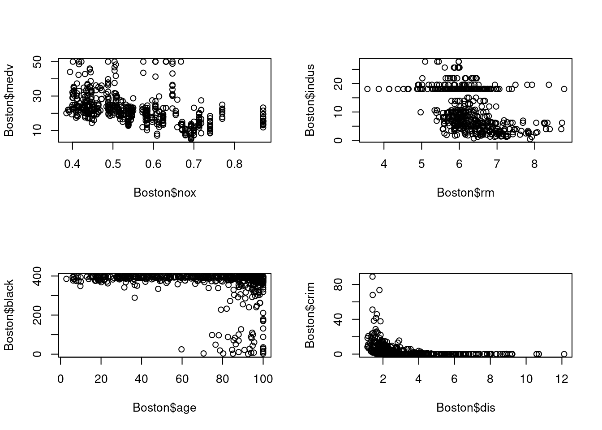
Are any of the predictors associated with per capita crime rate? If so, explain the relationship.
Do any of the suburbs of Boston appear to have particularly high crime rates? Tax rates? Pupil-teacher ratios? Comment on the range of each predictor.
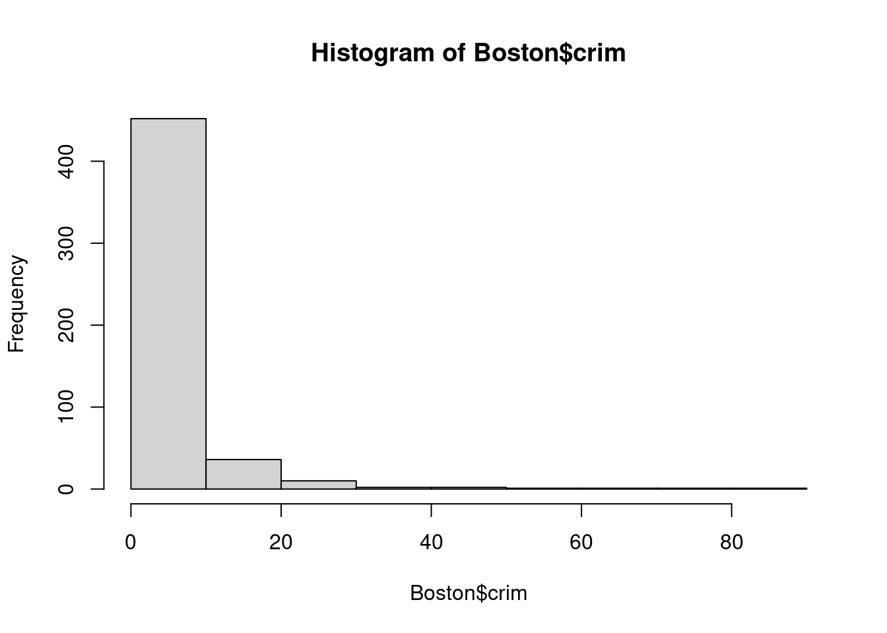
- How many of the suburbs in this data set bound the Charles river?
## [1] 35